clear
close all
clc
for l=[1,2]
if l==1
j="exp";
elseif l==2
j="sin";
end
for m=[1,2,3]
if m==1
i=0.1;
elseif m==2
i=1;
elseif m==3
i=100;
end
for n=[1,2,3]
if n==1
k="forward method";
elseif n==2
k="center difference";
elseif n==3
k="extrapolated difference";
end
fprintf('\n\nFor %s(%d) using %s:\n',j,i,k)
h=1;
nitr=1;
if l==1
real_diff=exp(i);
elseif l==2
real_diff=cos(i);
end
while h>=eps
ss(nitr)=h;
calc_diff=diff_(j,i,h,n);
error=abs(calc_diff-real_diff)/real_diff;
fprintf('iteration# = %d ,h = %e, calculated derivative = %e, relative error = %e;\n',nitr,h,calc_diff,error)
nitr=nitr+1;
h=h/2;
eval(['re',num2str(l),num2str(m),num2str(n),'(',num2str(nitr),')','=','error',';']);
end
end
end
end
cnt=1;
for l=[1,2]
for m=[1,2,3]
for n=[1,2,3]
figure(cnt)
eval(['loglog(ss,re',num2str(l),num2str(m),num2str(n),'(1:end-1));'])
if l==1
j="exp";
elseif l==2
j="sin";
end
if m==1
i=0.1;
elseif m==2
i=1;
elseif m==3
i=100;
end
if n==1
k="forward method";
elseif n==2
k="center difference";
elseif n==3
k="extrapolated difference";
end
title(num2str(cnt)+") "+j+"("+num2str(i)+") using "+k+";")
xlabel("log(h)");ylabel("log(\epsilon)");grid;
cnt=cnt+1;
end
end
end
For exp(1.000000e-01) using forward method:
iteration# = 1 ,h = 1.000000e+00, calculated derivative = 1.898995e+00, relative error = 7.182818e-01;
iteration# = 2 ,h = 5.000000e-01, calculated derivative = 1.433896e+00, relative error = 2.974425e-01;
iteration# = 3 ,h = 2.500000e-01, calculated derivative = 1.255587e+00, relative error = 1.361017e-01;
iteration# = 4 ,h = 1.250000e-01, calculated derivative = 1.177214e+00, relative error = 6.518762e-02;
iteration# = 5 ,h = 6.250000e-02, calculated derivative = 1.140438e+00, relative error = 3.191134e-02;
iteration# = 6 ,h = 3.125000e-02, calculated derivative = 1.122621e+00, relative error = 1.578904e-02;
iteration# = 7 ,h = 1.562500e-02, calculated derivative = 1.113850e+00, relative error = 7.853350e-03;
iteration# = 8 ,h = 7.812500e-03, calculated derivative = 1.109499e+00, relative error = 3.916442e-03;
iteration# = 9 ,h = 3.906250e-03, calculated derivative = 1.107332e+00, relative error = 1.955671e-03;
iteration# = 10 ,h = 1.953125e-03, calculated derivative = 1.106251e+00, relative error = 9.771986e-04;
iteration# = 11 ,h = 9.765625e-04, calculated derivative = 1.105711e+00, relative error = 4.884402e-04;
iteration# = 12 ,h = 4.882813e-04, calculated derivative = 1.105441e+00, relative error = 2.441804e-04;
iteration# = 13 ,h = 2.441406e-04, calculated derivative = 1.105306e+00, relative error = 1.220802e-04;
iteration# = 14 ,h = 1.220703e-04, calculated derivative = 1.105238e+00, relative error = 6.103764e-05;
iteration# = 15 ,h = 6.103516e-05, calculated derivative = 1.105205e+00, relative error = 3.051820e-05;
iteration# = 16 ,h = 3.051758e-05, calculated derivative = 1.105188e+00, relative error = 1.525894e-05;
iteration# = 17 ,h = 1.525879e-05, calculated derivative = 1.105179e+00, relative error = 7.629423e-06;
iteration# = 18 ,h = 7.629395e-06, calculated derivative = 1.105175e+00, relative error = 3.814698e-06;
iteration# = 19 ,h = 3.814697e-06, calculated derivative = 1.105173e+00, relative error = 1.907310e-06;
iteration# = 20 ,h = 1.907349e-06, calculated derivative = 1.105172e+00, relative error = 9.535889e-07;
iteration# = 21 ,h = 9.536743e-07, calculated derivative = 1.105171e+00, relative error = 4.768339e-07;
iteration# = 22 ,h = 4.768372e-07, calculated derivative = 1.105171e+00, relative error = 2.381404e-07;
iteration# = 23 ,h = 2.384186e-07, calculated derivative = 1.105171e+00, relative error = 1.184777e-07;
iteration# = 24 ,h = 1.192093e-07, calculated derivative = 1.105171e+00, relative error = 5.948899e-08;
iteration# = 25 ,h = 5.960464e-08, calculated derivative = 1.105171e+00, relative error = 2.915196e-08;
iteration# = 26 ,h = 2.980232e-08, calculated derivative = 1.105171e+00, relative error = 1.566883e-08;
iteration# = 27 ,h = 1.490116e-08, calculated derivative = 1.105171e+00, relative error = 2.185699e-09;
iteration# = 28 ,h = 7.450581e-09, calculated derivative = 1.105171e+00, relative error = 1.129743e-08;
iteration# = 29 ,h = 3.725290e-09, calculated derivative = 1.105171e+00, relative error = 1.129743e-08;
iteration# = 30 ,h = 1.862645e-09, calculated derivative = 1.105171e+00, relative error = 6.522994e-08;
iteration# = 31 ,h = 9.313226e-10, calculated derivative = 1.105171e+00, relative error = 1.730950e-07;
iteration# = 32 ,h = 4.656613e-10, calculated derivative = 1.105171e+00, relative error = 1.730950e-07;
iteration# = 33 ,h = 2.328306e-10, calculated derivative = 1.105170e+00, relative error = 6.045551e-07;
iteration# = 34 ,h = 1.164153e-10, calculated derivative = 1.105171e+00, relative error = 2.583651e-07;
iteration# = 35 ,h = 5.820766e-11, calculated derivative = 1.105171e+00, relative error = 2.583651e-07;
iteration# = 36 ,h = 2.910383e-11, calculated derivative = 1.105171e+00, relative error = 2.583651e-07;
iteration# = 37 ,h = 1.455192e-11, calculated derivative = 1.105164e+00, relative error = 6.644997e-06;
iteration# = 38 ,h = 7.275958e-12, calculated derivative = 1.105164e+00, relative error = 6.644997e-06;
iteration# = 39 ,h = 3.637979e-12, calculated derivative = 1.105164e+00, relative error = 6.644997e-06;
iteration# = 40 ,h = 1.818989e-12, calculated derivative = 1.105103e+00, relative error = 6.187189e-05;
iteration# = 41 ,h = 9.094947e-13, calculated derivative = 1.104980e+00, relative error = 1.723257e-04;
iteration# = 42 ,h = 4.547474e-13, calculated derivative = 1.104980e+00, relative error = 1.723257e-04;
iteration# = 43 ,h = 2.273737e-13, calculated derivative = 1.104492e+00, relative error = 6.141408e-04;
iteration# = 44 ,h = 1.136868e-13, calculated derivative = 1.105469e+00, relative error = 2.694895e-04;
iteration# = 45 ,h = 5.684342e-14, calculated derivative = 1.105469e+00, relative error = 2.694895e-04;
iteration# = 46 ,h = 2.842171e-14, calculated derivative = 1.101563e+00, relative error = 3.265032e-03;
iteration# = 47 ,h = 1.421085e-14, calculated derivative = 1.093750e+00, relative error = 1.033407e-02;
iteration# = 48 ,h = 7.105427e-15, calculated derivative = 1.093750e+00, relative error = 1.033407e-02;
iteration# = 49 ,h = 3.552714e-15, calculated derivative = 1.062500e+00, relative error = 3.861024e-02;
iteration# = 50 ,h = 1.776357e-15, calculated derivative = 1.000000e+00, relative error = 9.516258e-02;
iteration# = 51 ,h = 8.881784e-16, calculated derivative = 1.000000e+00, relative error = 9.516258e-02;
iteration# = 52 ,h = 4.440892e-16, calculated derivative = 1.000000e+00, relative error = 9.516258e-02;
iteration# = 53 ,h = 2.220446e-16, calculated derivative = 1.000000e+00, relative error = 9.516258e-02;
For exp(1.000000e-01) using center difference:
iteration# = 1 ,h = 1.000000e+00, calculated derivative = 1.151799e+00, relative error = 4.219061e-02;
iteration# = 2 ,h = 5.000000e-01, calculated derivative = 1.116719e+00, relative error = 1.044927e-02;
iteration# = 3 ,h = 2.500000e-01, calculated derivative = 1.108051e+00, relative error = 2.606202e-03;
iteration# = 4 ,h = 1.250000e-01, calculated derivative = 1.105891e+00, relative error = 6.511688e-04;
iteration# = 5 ,h = 6.250000e-02, calculated derivative = 1.105351e+00, relative error = 1.627684e-04;
iteration# = 6 ,h = 3.125000e-02, calculated derivative = 1.105216e+00, relative error = 4.069060e-05;
iteration# = 7 ,h = 1.562500e-02, calculated derivative = 1.105182e+00, relative error = 1.017256e-05;
iteration# = 8 ,h = 7.812500e-03, calculated derivative = 1.105174e+00, relative error = 2.543133e-06;
iteration# = 9 ,h = 3.906250e-03, calculated derivative = 1.105172e+00, relative error = 6.357830e-07;
iteration# = 10 ,h = 1.953125e-03, calculated derivative = 1.105171e+00, relative error = 1.589458e-07;
iteration# = 11 ,h = 9.765625e-04, calculated derivative = 1.105171e+00, relative error = 3.973647e-08;
iteration# = 12 ,h = 4.882813e-04, calculated derivative = 1.105171e+00, relative error = 9.934136e-09;
iteration# = 13 ,h = 2.441406e-04, calculated derivative = 1.105171e+00, relative error = 2.483605e-09;
iteration# = 14 ,h = 1.220703e-04, calculated derivative = 1.105171e+00, relative error = 6.204578e-10;
iteration# = 15 ,h = 6.103516e-05, calculated derivative = 1.105171e+00, relative error = 1.579628e-10;
iteration# = 16 ,h = 3.051758e-05, calculated derivative = 1.105171e+00, relative error = 3.945876e-11;
iteration# = 17 ,h = 1.525879e-05, calculated derivative = 1.105171e+00, relative error = 1.312452e-11;
iteration# = 18 ,h = 7.629395e-06, calculated derivative = 1.105171e+00, relative error = 4.259382e-14;
iteration# = 19 ,h = 3.814697e-06, calculated derivative = 1.105171e+00, relative error = 2.637683e-11;
iteration# = 20 ,h = 1.907349e-06, calculated derivative = 1.105171e+00, relative error = 7.896011e-11;
iteration# = 21 ,h = 9.536743e-07, calculated derivative = 1.105171e+00, relative error = 1.317138e-10;
iteration# = 22 ,h = 4.768372e-07, calculated derivative = 1.105171e+00, relative error = 3.423876e-10;
iteration# = 23 ,h = 2.384186e-07, calculated derivative = 1.105171e+00, relative error = 5.003079e-10;
iteration# = 24 ,h = 1.192093e-07, calculated derivative = 1.105171e+00, relative error = 5.003079e-10;
iteration# = 25 ,h = 5.960464e-08, calculated derivative = 1.105171e+00, relative error = 2.185699e-09;
iteration# = 26 ,h = 2.980232e-08, calculated derivative = 1.105171e+00, relative error = 2.185699e-09;
iteration# = 27 ,h = 1.490116e-08, calculated derivative = 1.105171e+00, relative error = 2.185699e-09;
iteration# = 28 ,h = 7.450581e-09, calculated derivative = 1.105171e+00, relative error = 1.566883e-08;
iteration# = 29 ,h = 3.725290e-09, calculated derivative = 1.105171e+00, relative error = 1.129743e-08;
iteration# = 30 ,h = 1.862645e-09, calculated derivative = 1.105171e+00, relative error = 6.522994e-08;
iteration# = 31 ,h = 9.313226e-10, calculated derivative = 1.105171e+00, relative error = 4.263508e-08;
iteration# = 32 ,h = 4.656613e-10, calculated derivative = 1.105171e+00, relative error = 1.730950e-07;
iteration# = 33 ,h = 2.328306e-10, calculated derivative = 1.105171e+00, relative error = 2.583651e-07;
iteration# = 34 ,h = 1.164153e-10, calculated derivative = 1.105171e+00, relative error = 2.583651e-07;
iteration# = 35 ,h = 5.820766e-11, calculated derivative = 1.105171e+00, relative error = 2.583651e-07;
iteration# = 36 ,h = 2.910383e-11, calculated derivative = 1.105171e+00, relative error = 2.583651e-07;
iteration# = 37 ,h = 1.455192e-11, calculated derivative = 1.105179e+00, relative error = 7.161727e-06;
iteration# = 38 ,h = 7.275958e-12, calculated derivative = 1.105194e+00, relative error = 2.096845e-05;
iteration# = 39 ,h = 3.637979e-12, calculated derivative = 1.105164e+00, relative error = 6.644997e-06;
iteration# = 40 ,h = 1.818989e-12, calculated derivative = 1.105103e+00, relative error = 6.187189e-05;
iteration# = 41 ,h = 9.094947e-13, calculated derivative = 1.105225e+00, relative error = 4.858190e-05;
iteration# = 42 ,h = 4.547474e-13, calculated derivative = 1.104980e+00, relative error = 1.723257e-04;
iteration# = 43 ,h = 2.273737e-13, calculated derivative = 1.105469e+00, relative error = 2.694895e-04;
iteration# = 44 ,h = 1.136868e-13, calculated derivative = 1.105469e+00, relative error = 2.694895e-04;
iteration# = 45 ,h = 5.684342e-14, calculated derivative = 1.105469e+00, relative error = 2.694895e-04;
iteration# = 46 ,h = 2.842171e-14, calculated derivative = 1.101563e+00, relative error = 3.265032e-03;
iteration# = 47 ,h = 1.421085e-14, calculated derivative = 1.109375e+00, relative error = 3.804011e-03;
iteration# = 48 ,h = 7.105427e-15, calculated derivative = 1.093750e+00, relative error = 1.033407e-02;
iteration# = 49 ,h = 3.552714e-15, calculated derivative = 1.062500e+00, relative error = 3.861024e-02;
iteration# = 50 ,h = 1.776357e-15, calculated derivative = 1.125000e+00, relative error = 1.794210e-02;
iteration# = 51 ,h = 8.881784e-16, calculated derivative = 1.250000e+00, relative error = 1.310468e-01;
iteration# = 52 ,h = 4.440892e-16, calculated derivative = 1.500000e+00, relative error = 3.572561e-01;
iteration# = 53 ,h = 2.220446e-16, calculated derivative = 1.000000e+00, relative error = 9.516258e-02;
For exp(1.000000e-01) using extrapolated difference:
iteration# = 1 ,h = 1.000000e+00, calculated derivative = 1.163492e+00, relative error = 5.277106e-02;
iteration# = 2 ,h = 5.000000e-01, calculated derivative = 1.119608e+00, relative error = 1.306362e-02;
iteration# = 3 ,h = 2.500000e-01, calculated derivative = 1.108771e+00, relative error = 3.257880e-03;
iteration# = 4 ,h = 1.250000e-01, calculated derivative = 1.106070e+00, relative error = 8.139690e-04;
iteration# = 5 ,h = 6.250000e-02, calculated derivative = 1.105396e+00, relative error = 2.034610e-04;
iteration# = 6 ,h = 3.125000e-02, calculated derivative = 1.105227e+00, relative error = 5.086328e-05;
iteration# = 7 ,h = 1.562500e-02, calculated derivative = 1.105185e+00, relative error = 1.271570e-05;
iteration# = 8 ,h = 7.812500e-03, calculated derivative = 1.105174e+00, relative error = 3.178917e-06;
iteration# = 9 ,h = 3.906250e-03, calculated derivative = 1.105172e+00, relative error = 7.947288e-07;
iteration# = 10 ,h = 1.953125e-03, calculated derivative = 1.105171e+00, relative error = 1.986822e-07;
iteration# = 11 ,h = 9.765625e-04, calculated derivative = 1.105171e+00, relative error = 4.967058e-08;
iteration# = 12 ,h = 4.882813e-04, calculated derivative = 1.105171e+00, relative error = 1.241765e-08;
iteration# = 13 ,h = 2.441406e-04, calculated derivative = 1.105171e+00, relative error = 3.104654e-09;
iteration# = 14 ,h = 1.220703e-04, calculated derivative = 1.105171e+00, relative error = 7.746227e-10;
iteration# = 15 ,h = 6.103516e-05, calculated derivative = 1.105171e+00, relative error = 1.974642e-10;
iteration# = 16 ,h = 3.051758e-05, calculated derivative = 1.105171e+00, relative error = 4.823690e-11;
iteration# = 17 ,h = 1.525879e-05, calculated derivative = 1.105171e+00, relative error = 1.751350e-11;
iteration# = 18 ,h = 7.629395e-06, calculated derivative = 1.105171e+00, relative error = 8.735551e-12;
iteration# = 19 ,h = 3.814697e-06, calculated derivative = 1.105171e+00, relative error = 6.148921e-11;
iteration# = 20 ,h = 1.907349e-06, calculated derivative = 1.105171e+00, relative error = 1.491847e-10;
iteration# = 21 ,h = 9.536743e-07, calculated derivative = 1.105171e+00, relative error = 6.148921e-11;
iteration# = 22 ,h = 4.768372e-07, calculated derivative = 1.105171e+00, relative error = 6.232861e-10;
iteration# = 23 ,h = 2.384186e-07, calculated derivative = 1.105171e+00, relative error = 5.003079e-10;
iteration# = 24 ,h = 1.192093e-07, calculated derivative = 1.105171e+00, relative error = 6.148921e-11;
iteration# = 25 ,h = 5.960464e-08, calculated derivative = 1.105171e+00, relative error = 2.185699e-09;
iteration# = 26 ,h = 2.980232e-08, calculated derivative = 1.105171e+00, relative error = 2.185699e-09;
iteration# = 27 ,h = 1.490116e-08, calculated derivative = 1.105171e+00, relative error = 2.308677e-09;
iteration# = 28 ,h = 7.450581e-09, calculated derivative = 1.105171e+00, relative error = 2.465758e-08;
iteration# = 29 ,h = 3.725290e-09, calculated derivative = 1.105171e+00, relative error = 6.680075e-09;
iteration# = 30 ,h = 1.862645e-09, calculated derivative = 1.105171e+00, relative error = 1.011850e-07;
iteration# = 31 ,h = 9.313226e-10, calculated derivative = 1.105171e+00, relative error = 1.145451e-07;
iteration# = 32 ,h = 4.656613e-10, calculated derivative = 1.105171e+00, relative error = 3.169150e-07;
iteration# = 33 ,h = 2.328306e-10, calculated derivative = 1.105171e+00, relative error = 2.583651e-07;
iteration# = 34 ,h = 1.164153e-10, calculated derivative = 1.105171e+00, relative error = 2.583651e-07;
iteration# = 35 ,h = 5.820766e-11, calculated derivative = 1.105171e+00, relative error = 2.583651e-07;
iteration# = 36 ,h = 2.910383e-11, calculated derivative = 1.105169e+00, relative error = 2.042755e-06;
iteration# = 37 ,h = 1.455192e-11, calculated derivative = 1.105174e+00, relative error = 2.559486e-06;
iteration# = 38 ,h = 7.275958e-12, calculated derivative = 1.105204e+00, relative error = 3.017293e-05;
iteration# = 39 ,h = 3.637979e-12, calculated derivative = 1.105184e+00, relative error = 1.176397e-05;
iteration# = 40 ,h = 1.818989e-12, calculated derivative = 1.105062e+00, relative error = 9.868982e-05;
iteration# = 41 ,h = 9.094947e-13, calculated derivative = 1.105306e+00, relative error = 1.222178e-04;
iteration# = 42 ,h = 4.547474e-13, calculated derivative = 1.104818e+00, relative error = 3.195974e-04;
iteration# = 43 ,h = 2.273737e-13, calculated derivative = 1.105469e+00, relative error = 2.694895e-04;
iteration# = 44 ,h = 1.136868e-13, calculated derivative = 1.105469e+00, relative error = 2.694895e-04;
iteration# = 45 ,h = 5.684342e-14, calculated derivative = 1.106771e+00, relative error = 1.447663e-03;
iteration# = 46 ,h = 2.842171e-14, calculated derivative = 1.098958e+00, relative error = 5.621379e-03;
iteration# = 47 ,h = 1.421085e-14, calculated derivative = 1.114583e+00, relative error = 8.516706e-03;
iteration# = 48 ,h = 7.105427e-15, calculated derivative = 1.104167e+00, relative error = 9.086843e-04;
iteration# = 49 ,h = 3.552714e-15, calculated derivative = 1.041667e+00, relative error = 5.746102e-02;
iteration# = 50 ,h = 1.776357e-15, calculated derivative = 1.083333e+00, relative error = 1.975946e-02;
iteration# = 51 ,h = 8.881784e-16, calculated derivative = 1.166667e+00, relative error = 5.564365e-02;
iteration# = 52 ,h = 4.440892e-16, calculated derivative = 1.666667e+00, relative error = 5.080624e-01;
iteration# = 53 ,h = 2.220446e-16, calculated derivative = 6.666667e-01, relative error = 3.967751e-01;
For exp(1) using forward method:
iteration# = 1 ,h = 1.000000e+00, calculated derivative = 4.670774e+00, relative error = 7.182818e-01;
iteration# = 2 ,h = 5.000000e-01, calculated derivative = 3.526814e+00, relative error = 2.974425e-01;
iteration# = 3 ,h = 2.500000e-01, calculated derivative = 3.088245e+00, relative error = 1.361017e-01;
iteration# = 4 ,h = 1.250000e-01, calculated derivative = 2.895480e+00, relative error = 6.518762e-02;
iteration# = 5 ,h = 6.250000e-02, calculated derivative = 2.805026e+00, relative error = 3.191134e-02;
iteration# = 6 ,h = 3.125000e-02, calculated derivative = 2.761201e+00, relative error = 1.578904e-02;
iteration# = 7 ,h = 1.562500e-02, calculated derivative = 2.739629e+00, relative error = 7.853350e-03;
iteration# = 8 ,h = 7.812500e-03, calculated derivative = 2.728928e+00, relative error = 3.916442e-03;
iteration# = 9 ,h = 3.906250e-03, calculated derivative = 2.723598e+00, relative error = 1.955671e-03;
iteration# = 10 ,h = 1.953125e-03, calculated derivative = 2.720938e+00, relative error = 9.771986e-04;
iteration# = 11 ,h = 9.765625e-04, calculated derivative = 2.719610e+00, relative error = 4.884402e-04;
iteration# = 12 ,h = 4.882813e-04, calculated derivative = 2.718946e+00, relative error = 2.441804e-04;
iteration# = 13 ,h = 2.441406e-04, calculated derivative = 2.718614e+00, relative error = 1.220802e-04;
iteration# = 14 ,h = 1.220703e-04, calculated derivative = 2.718448e+00, relative error = 6.103764e-05;
iteration# = 15 ,h = 6.103516e-05, calculated derivative = 2.718365e+00, relative error = 3.051820e-05;
iteration# = 16 ,h = 3.051758e-05, calculated derivative = 2.718323e+00, relative error = 1.525894e-05;
iteration# = 17 ,h = 1.525879e-05, calculated derivative = 2.718303e+00, relative error = 7.629420e-06;
iteration# = 18 ,h = 7.629395e-06, calculated derivative = 2.718292e+00, relative error = 3.814687e-06;
iteration# = 19 ,h = 3.814697e-06, calculated derivative = 2.718287e+00, relative error = 1.907331e-06;
iteration# = 20 ,h = 1.907349e-06, calculated derivative = 2.718284e+00, relative error = 9.536208e-07;
iteration# = 21 ,h = 9.536743e-07, calculated derivative = 2.718283e+00, relative error = 4.767015e-07;
iteration# = 22 ,h = 4.768372e-07, calculated derivative = 2.718282e+00, relative error = 2.382419e-07;
iteration# = 23 ,h = 2.384186e-07, calculated derivative = 2.718282e+00, relative error = 1.190120e-07;
iteration# = 24 ,h = 1.192093e-07, calculated derivative = 2.718282e+00, relative error = 5.871189e-08;
iteration# = 25 ,h = 5.960464e-08, calculated derivative = 2.718282e+00, relative error = 2.719136e-08;
iteration# = 26 ,h = 2.980232e-08, calculated derivative = 2.718282e+00, relative error = 1.348679e-08;
iteration# = 27 ,h = 1.490116e-08, calculated derivative = 2.718282e+00, relative error = 2.523125e-09;
iteration# = 28 ,h = 7.450581e-09, calculated derivative = 2.718282e+00, relative error = 8.440536e-09;
iteration# = 29 ,h = 3.725290e-09, calculated derivative = 2.718282e+00, relative error = 3.036786e-08;
iteration# = 30 ,h = 1.862645e-09, calculated derivative = 2.718282e+00, relative error = 3.036786e-08;
iteration# = 31 ,h = 9.313226e-10, calculated derivative = 2.718282e+00, relative error = 3.036786e-08;
iteration# = 32 ,h = 4.656613e-10, calculated derivative = 2.718281e+00, relative error = 3.812050e-07;
iteration# = 33 ,h = 2.328306e-10, calculated derivative = 2.718281e+00, relative error = 3.812050e-07;
iteration# = 34 ,h = 1.164153e-10, calculated derivative = 2.718277e+00, relative error = 1.784554e-06;
iteration# = 35 ,h = 5.820766e-11, calculated derivative = 2.718277e+00, relative error = 1.784554e-06;
iteration# = 36 ,h = 2.910383e-11, calculated derivative = 2.718277e+00, relative error = 1.784554e-06;
iteration# = 37 ,h = 1.455192e-11, calculated derivative = 2.718262e+00, relative error = 7.397949e-06;
iteration# = 38 ,h = 7.275958e-12, calculated derivative = 2.718262e+00, relative error = 7.397949e-06;
iteration# = 39 ,h = 3.637979e-12, calculated derivative = 2.718262e+00, relative error = 7.397949e-06;
iteration# = 40 ,h = 1.818989e-12, calculated derivative = 2.718262e+00, relative error = 7.397949e-06;
iteration# = 41 ,h = 9.094947e-13, calculated derivative = 2.717773e+00, relative error = 1.870266e-04;
iteration# = 42 ,h = 4.547474e-13, calculated derivative = 2.717773e+00, relative error = 1.870266e-04;
iteration# = 43 ,h = 2.273737e-13, calculated derivative = 2.716797e+00, relative error = 5.462838e-04;
iteration# = 44 ,h = 1.136868e-13, calculated derivative = 2.714844e+00, relative error = 1.264798e-03;
iteration# = 45 ,h = 5.684342e-14, calculated derivative = 2.710938e+00, relative error = 2.701827e-03;
iteration# = 46 ,h = 2.842171e-14, calculated derivative = 2.703125e+00, relative error = 5.575886e-03;
iteration# = 47 ,h = 1.421085e-14, calculated derivative = 2.687500e+00, relative error = 1.132400e-02;
iteration# = 48 ,h = 7.105427e-15, calculated derivative = 2.687500e+00, relative error = 1.132400e-02;
iteration# = 49 ,h = 3.552714e-15, calculated derivative = 2.625000e+00, relative error = 3.431647e-02;
iteration# = 50 ,h = 1.776357e-15, calculated derivative = 2.500000e+00, relative error = 8.030140e-02;
iteration# = 51 ,h = 8.881784e-16, calculated derivative = 2.500000e+00, relative error = 8.030140e-02;
iteration# = 52 ,h = 4.440892e-16, calculated derivative = 2.000000e+00, relative error = 2.642411e-01;
iteration# = 53 ,h = 2.220446e-16, calculated derivative = 2.000000e+00, relative error = 2.642411e-01;
For exp(1) using center difference:
iteration# = 1 ,h = 1.000000e+00, calculated derivative = 2.832968e+00, relative error = 4.219061e-02;
iteration# = 2 ,h = 5.000000e-01, calculated derivative = 2.746686e+00, relative error = 1.044927e-02;
iteration# = 3 ,h = 2.500000e-01, calculated derivative = 2.725366e+00, relative error = 2.606202e-03;
iteration# = 4 ,h = 1.250000e-01, calculated derivative = 2.720052e+00, relative error = 6.511688e-04;
iteration# = 5 ,h = 6.250000e-02, calculated derivative = 2.718724e+00, relative error = 1.627684e-04;
iteration# = 6 ,h = 3.125000e-02, calculated derivative = 2.718392e+00, relative error = 4.069060e-05;
iteration# = 7 ,h = 1.562500e-02, calculated derivative = 2.718309e+00, relative error = 1.017256e-05;
iteration# = 8 ,h = 7.812500e-03, calculated derivative = 2.718289e+00, relative error = 2.543133e-06;
iteration# = 9 ,h = 3.906250e-03, calculated derivative = 2.718284e+00, relative error = 6.357830e-07;
iteration# = 10 ,h = 1.953125e-03, calculated derivative = 2.718282e+00, relative error = 1.589457e-07;
iteration# = 11 ,h = 9.765625e-04, calculated derivative = 2.718282e+00, relative error = 3.973627e-08;
iteration# = 12 ,h = 4.882813e-04, calculated derivative = 2.718282e+00, relative error = 9.934170e-09;
iteration# = 13 ,h = 2.441406e-04, calculated derivative = 2.718282e+00, relative error = 2.483645e-09;
iteration# = 14 ,h = 1.220703e-04, calculated derivative = 2.718282e+00, relative error = 6.213477e-10;
iteration# = 15 ,h = 6.103516e-05, calculated derivative = 2.718282e+00, relative error = 1.542679e-10;
iteration# = 16 ,h = 3.051758e-05, calculated derivative = 2.718282e+00, relative error = 3.381753e-11;
iteration# = 17 ,h = 1.525879e-05, calculated derivative = 2.718282e+00, relative error = 7.050778e-12;
iteration# = 18 ,h = 7.629395e-06, calculated derivative = 2.718282e+00, relative error = 1.775748e-11;
iteration# = 19 ,h = 3.814697e-06, calculated derivative = 2.718282e+00, relative error = 3.655923e-12;
iteration# = 20 ,h = 1.907349e-06, calculated derivative = 2.718282e+00, relative error = 4.648273e-11;
iteration# = 21 ,h = 9.536743e-07, calculated derivative = 2.718282e+00, relative error = 4.648273e-11;
iteration# = 22 ,h = 4.768372e-07, calculated derivative = 2.718282e+00, relative error = 1.248245e-10;
iteration# = 23 ,h = 2.384186e-07, calculated derivative = 2.718282e+00, relative error = 2.177899e-10;
iteration# = 24 ,h = 1.192093e-07, calculated derivative = 2.718282e+00, relative error = 2.177899e-10;
iteration# = 25 ,h = 5.960464e-08, calculated derivative = 2.718282e+00, relative error = 2.523125e-09;
iteration# = 26 ,h = 2.980232e-08, calculated derivative = 2.718282e+00, relative error = 2.523125e-09;
iteration# = 27 ,h = 1.490116e-08, calculated derivative = 2.718282e+00, relative error = 2.523125e-09;
iteration# = 28 ,h = 7.450581e-09, calculated derivative = 2.718282e+00, relative error = 8.440536e-09;
iteration# = 29 ,h = 3.725290e-09, calculated derivative = 2.718282e+00, relative error = 1.348679e-08;
iteration# = 30 ,h = 1.862645e-09, calculated derivative = 2.718282e+00, relative error = 5.734143e-08;
iteration# = 31 ,h = 9.313226e-10, calculated derivative = 2.718282e+00, relative error = 3.036786e-08;
iteration# = 32 ,h = 4.656613e-10, calculated derivative = 2.718282e+00, relative error = 3.036786e-08;
iteration# = 33 ,h = 2.328306e-10, calculated derivative = 2.718281e+00, relative error = 3.812050e-07;
iteration# = 34 ,h = 1.164153e-10, calculated derivative = 2.718281e+00, relative error = 3.812050e-07;
iteration# = 35 ,h = 5.820766e-11, calculated derivative = 2.718285e+00, relative error = 1.022144e-06;
iteration# = 36 ,h = 2.910383e-11, calculated derivative = 2.718277e+00, relative error = 1.784554e-06;
iteration# = 37 ,h = 1.455192e-11, calculated derivative = 2.718292e+00, relative error = 3.828841e-06;
iteration# = 38 ,h = 7.275958e-12, calculated derivative = 2.718323e+00, relative error = 1.505563e-05;
iteration# = 39 ,h = 3.637979e-12, calculated derivative = 2.718384e+00, relative error = 3.750921e-05;
iteration# = 40 ,h = 1.818989e-12, calculated derivative = 2.718262e+00, relative error = 7.397949e-06;
iteration# = 41 ,h = 9.094947e-13, calculated derivative = 2.718262e+00, relative error = 7.397949e-06;
iteration# = 42 ,h = 4.547474e-13, calculated derivative = 2.717773e+00, relative error = 1.870266e-04;
iteration# = 43 ,h = 2.273737e-13, calculated derivative = 2.716797e+00, relative error = 5.462838e-04;
iteration# = 44 ,h = 1.136868e-13, calculated derivative = 2.714844e+00, relative error = 1.264798e-03;
iteration# = 45 ,h = 5.684342e-14, calculated derivative = 2.710938e+00, relative error = 2.701827e-03;
iteration# = 46 ,h = 2.842171e-14, calculated derivative = 2.718750e+00, relative error = 1.722307e-04;
iteration# = 47 ,h = 1.421085e-14, calculated derivative = 2.718750e+00, relative error = 1.722307e-04;
iteration# = 48 ,h = 7.105427e-15, calculated derivative = 2.687500e+00, relative error = 1.132400e-02;
iteration# = 49 ,h = 3.552714e-15, calculated derivative = 2.750000e+00, relative error = 1.166846e-02;
iteration# = 50 ,h = 1.776357e-15, calculated derivative = 2.750000e+00, relative error = 1.166846e-02;
iteration# = 51 ,h = 8.881784e-16, calculated derivative = 2.500000e+00, relative error = 8.030140e-02;
iteration# = 52 ,h = 4.440892e-16, calculated derivative = 3.000000e+00, relative error = 1.036383e-01;
iteration# = 53 ,h = 2.220446e-16, calculated derivative = 2.000000e+00, relative error = 2.642411e-01;
For exp(1) using extrapolated difference:
iteration# = 1 ,h = 1.000000e+00, calculated derivative = 2.861728e+00, relative error = 5.277106e-02;
iteration# = 2 ,h = 5.000000e-01, calculated derivative = 2.753792e+00, relative error = 1.306362e-02;
iteration# = 3 ,h = 2.500000e-01, calculated derivative = 2.727138e+00, relative error = 3.257880e-03;
iteration# = 4 ,h = 1.250000e-01, calculated derivative = 2.720494e+00, relative error = 8.139690e-04;
iteration# = 5 ,h = 6.250000e-02, calculated derivative = 2.718835e+00, relative error = 2.034610e-04;
iteration# = 6 ,h = 3.125000e-02, calculated derivative = 2.718420e+00, relative error = 5.086328e-05;
iteration# = 7 ,h = 1.562500e-02, calculated derivative = 2.718316e+00, relative error = 1.271570e-05;
iteration# = 8 ,h = 7.812500e-03, calculated derivative = 2.718290e+00, relative error = 3.178917e-06;
iteration# = 9 ,h = 3.906250e-03, calculated derivative = 2.718284e+00, relative error = 7.947288e-07;
iteration# = 10 ,h = 1.953125e-03, calculated derivative = 2.718282e+00, relative error = 1.986822e-07;
iteration# = 11 ,h = 9.765625e-04, calculated derivative = 2.718282e+00, relative error = 4.967031e-08;
iteration# = 12 ,h = 4.882813e-04, calculated derivative = 2.718282e+00, relative error = 1.241768e-08;
iteration# = 13 ,h = 2.441406e-04, calculated derivative = 2.718282e+00, relative error = 3.104410e-09;
iteration# = 14 ,h = 1.220703e-04, calculated derivative = 2.718282e+00, relative error = 7.770411e-10;
iteration# = 15 ,h = 6.103516e-05, calculated derivative = 2.718282e+00, relative error = 1.944180e-10;
iteration# = 16 ,h = 3.051758e-05, calculated derivative = 2.718282e+00, relative error = 4.273973e-11;
iteration# = 17 ,h = 1.525879e-05, calculated derivative = 2.718282e+00, relative error = 3.481932e-12;
iteration# = 18 ,h = 7.629395e-06, calculated derivative = 2.718282e+00, relative error = 2.489533e-11;
iteration# = 19 ,h = 3.814697e-06, calculated derivative = 2.718282e+00, relative error = 1.061962e-11;
iteration# = 20 ,h = 1.907349e-06, calculated derivative = 2.718282e+00, relative error = 4.648273e-11;
iteration# = 21 ,h = 9.536743e-07, calculated derivative = 2.718282e+00, relative error = 1.035851e-10;
iteration# = 22 ,h = 4.768372e-07, calculated derivative = 2.718282e+00, relative error = 2.390294e-10;
iteration# = 23 ,h = 2.384186e-07, calculated derivative = 2.718282e+00, relative error = 2.177899e-10;
iteration# = 24 ,h = 1.192093e-07, calculated derivative = 2.718282e+00, relative error = 1.131428e-09;
iteration# = 25 ,h = 5.960464e-08, calculated derivative = 2.718282e+00, relative error = 2.523125e-09;
iteration# = 26 ,h = 2.980232e-08, calculated derivative = 2.718282e+00, relative error = 2.523125e-09;
iteration# = 27 ,h = 1.490116e-08, calculated derivative = 2.718282e+00, relative error = 6.177679e-09;
iteration# = 28 ,h = 7.450581e-09, calculated derivative = 2.718282e+00, relative error = 1.574964e-08;
iteration# = 29 ,h = 3.725290e-09, calculated derivative = 2.718282e+00, relative error = 1.131428e-09;
iteration# = 30 ,h = 1.862645e-09, calculated derivative = 2.718282e+00, relative error = 8.657787e-08;
iteration# = 31 ,h = 9.313226e-10, calculated derivative = 2.718282e+00, relative error = 3.036786e-08;
iteration# = 32 ,h = 4.656613e-10, calculated derivative = 2.718282e+00, relative error = 8.657787e-08;
iteration# = 33 ,h = 2.328306e-10, calculated derivative = 2.718281e+00, relative error = 3.812050e-07;
iteration# = 34 ,h = 1.164153e-10, calculated derivative = 2.718280e+00, relative error = 8.489879e-07;
iteration# = 35 ,h = 5.820766e-11, calculated derivative = 2.718287e+00, relative error = 1.957709e-06;
iteration# = 36 ,h = 2.910383e-11, calculated derivative = 2.718272e+00, relative error = 3.655685e-06;
iteration# = 37 ,h = 1.455192e-11, calculated derivative = 2.718282e+00, relative error = 8.657787e-08;
iteration# = 38 ,h = 7.275958e-12, calculated derivative = 2.718302e+00, relative error = 7.571104e-06;
iteration# = 39 ,h = 3.637979e-12, calculated derivative = 2.718424e+00, relative error = 5.247826e-05;
iteration# = 40 ,h = 1.818989e-12, calculated derivative = 2.718262e+00, relative error = 7.397949e-06;
iteration# = 41 ,h = 9.094947e-13, calculated derivative = 2.718424e+00, relative error = 5.247826e-05;
iteration# = 42 ,h = 4.547474e-13, calculated derivative = 2.718099e+00, relative error = 6.727416e-05;
iteration# = 43 ,h = 2.273737e-13, calculated derivative = 2.717448e+00, relative error = 3.067790e-04;
iteration# = 44 ,h = 1.136868e-13, calculated derivative = 2.716146e+00, relative error = 7.857887e-04;
iteration# = 45 ,h = 5.684342e-14, calculated derivative = 2.708333e+00, relative error = 3.659847e-03;
iteration# = 46 ,h = 2.842171e-14, calculated derivative = 2.718750e+00, relative error = 1.722307e-04;
iteration# = 47 ,h = 1.421085e-14, calculated derivative = 2.729167e+00, relative error = 4.004308e-03;
iteration# = 48 ,h = 7.105427e-15, calculated derivative = 2.666667e+00, relative error = 1.898816e-02;
iteration# = 49 ,h = 3.552714e-15, calculated derivative = 2.750000e+00, relative error = 1.166846e-02;
iteration# = 50 ,h = 1.776357e-15, calculated derivative = 2.833333e+00, relative error = 4.232508e-02;
iteration# = 51 ,h = 8.881784e-16, calculated derivative = 2.333333e+00, relative error = 1.416146e-01;
iteration# = 52 ,h = 4.440892e-16, calculated derivative = 3.333333e+00, relative error = 2.262648e-01;
iteration# = 53 ,h = 2.220446e-16, calculated derivative = 2.666667e+00, relative error = 1.898816e-02;
For exp(100) using forward method:
iteration# = 1 ,h = 1.000000e+00, calculated derivative = 4.618943e+43, relative error = 7.182818e-01;
iteration# = 2 ,h = 5.000000e-01, calculated derivative = 3.487678e+43, relative error = 2.974425e-01;
iteration# = 3 ,h = 2.500000e-01, calculated derivative = 3.053974e+43, relative error = 1.361017e-01;
iteration# = 4 ,h = 1.250000e-01, calculated derivative = 2.863349e+43, relative error = 6.518762e-02;
iteration# = 5 ,h = 6.250000e-02, calculated derivative = 2.773899e+43, relative error = 3.191134e-02;
iteration# = 6 ,h = 3.125000e-02, calculated derivative = 2.730560e+43, relative error = 1.578904e-02;
iteration# = 7 ,h = 1.562500e-02, calculated derivative = 2.709228e+43, relative error = 7.853350e-03;
iteration# = 8 ,h = 7.812500e-03, calculated derivative = 2.698645e+43, relative error = 3.916442e-03;
iteration# = 9 ,h = 3.906250e-03, calculated derivative = 2.693374e+43, relative error = 1.955671e-03;
iteration# = 10 ,h = 1.953125e-03, calculated derivative = 2.690744e+43, relative error = 9.771986e-04;
iteration# = 11 ,h = 9.765625e-04, calculated derivative = 2.689430e+43, relative error = 4.884402e-04;
iteration# = 12 ,h = 4.882813e-04, calculated derivative = 2.688774e+43, relative error = 2.441804e-04;
iteration# = 13 ,h = 2.441406e-04, calculated derivative = 2.688445e+43, relative error = 1.220802e-04;
iteration# = 14 ,h = 1.220703e-04, calculated derivative = 2.688281e+43, relative error = 6.103764e-05;
iteration# = 15 ,h = 6.103516e-05, calculated derivative = 2.688199e+43, relative error = 3.051820e-05;
iteration# = 16 ,h = 3.051758e-05, calculated derivative = 2.688158e+43, relative error = 1.525894e-05;
iteration# = 17 ,h = 1.525879e-05, calculated derivative = 2.688138e+43, relative error = 7.629426e-06;
iteration# = 18 ,h = 7.629395e-06, calculated derivative = 2.688127e+43, relative error = 3.814700e-06;
iteration# = 19 ,h = 3.814697e-06, calculated derivative = 2.688122e+43, relative error = 1.907343e-06;
iteration# = 20 ,h = 1.907349e-06, calculated derivative = 2.688120e+43, relative error = 9.536288e-07;
iteration# = 21 ,h = 9.536743e-07, calculated derivative = 2.688118e+43, relative error = 4.768198e-07;
iteration# = 22 ,h = 4.768372e-07, calculated derivative = 2.688118e+43, relative error = 2.384635e-07;
iteration# = 23 ,h = 2.384186e-07, calculated derivative = 2.688117e+43, relative error = 1.187060e-07;
iteration# = 24 ,h = 1.192093e-07, calculated derivative = 2.688117e+43, relative error = 5.998612e-08;
iteration# = 25 ,h = 5.960464e-08, calculated derivative = 2.688117e+43, relative error = 2.753568e-08;
iteration# = 26 ,h = 2.980232e-08, calculated derivative = 2.688117e+43, relative error = 1.517361e-08;
iteration# = 27 ,h = 1.490116e-08, calculated derivative = 2.688117e+43, relative error = 2.811536e-09;
iteration# = 28 ,h = 7.450581e-09, calculated derivative = 2.688117e+43, relative error = 9.550537e-09;
iteration# = 29 ,h = 3.725290e-09, calculated derivative = 2.688117e+43, relative error = 3.427468e-08;
iteration# = 30 ,h = 1.862645e-09, calculated derivative = 2.688117e+43, relative error = 1.517361e-08;
iteration# = 31 ,h = 9.313226e-10, calculated derivative = 2.688117e+43, relative error = 8.372297e-08;
iteration# = 32 ,h = 4.656613e-10, calculated derivative = 2.688117e+43, relative error = 8.372297e-08;
iteration# = 33 ,h = 2.328306e-10, calculated derivative = 2.688116e+43, relative error = 4.793093e-07;
iteration# = 34 ,h = 1.164153e-10, calculated derivative = 2.688116e+43, relative error = 4.793093e-07;
iteration# = 35 ,h = 5.820766e-11, calculated derivative = 2.688112e+43, relative error = 2.061655e-06;
iteration# = 36 ,h = 2.910383e-11, calculated derivative = 2.688112e+43, relative error = 2.061655e-06;
iteration# = 37 ,h = 1.455192e-11, calculated derivative = 2.688095e+43, relative error = 8.391036e-06;
iteration# = 38 ,h = 7.275958e-12, calculated derivative = 2.688095e+43, relative error = 8.391036e-06;
iteration# = 39 ,h = 3.637979e-12, calculated derivative = 2.688095e+43, relative error = 8.391036e-06;
iteration# = 40 ,h = 1.818989e-12, calculated derivative = 2.687958e+43, relative error = 5.902609e-05;
iteration# = 41 ,h = 9.094947e-13, calculated derivative = 2.687958e+43, relative error = 5.902609e-05;
iteration# = 42 ,h = 4.547474e-13, calculated derivative = 2.687414e+43, relative error = 2.615663e-04;
iteration# = 43 ,h = 2.273737e-13, calculated derivative = 2.687414e+43, relative error = 2.615663e-04;
iteration# = 44 ,h = 1.136868e-13, calculated derivative = 2.687414e+43, relative error = 2.615663e-04;
iteration# = 45 ,h = 5.684342e-14, calculated derivative = 2.683058e+43, relative error = 1.881888e-03;
iteration# = 46 ,h = 2.842171e-14, calculated derivative = 2.683058e+43, relative error = 1.881888e-03;
iteration# = 47 ,h = 1.421085e-14, calculated derivative = 2.683058e+43, relative error = 1.881888e-03;
iteration# = 48 ,h = 7.105427e-15, calculated derivative = 0.000000e+00, relative error = 1.000000e+00;
iteration# = 49 ,h = 3.552714e-15, calculated derivative = 0.000000e+00, relative error = 1.000000e+00;
iteration# = 50 ,h = 1.776357e-15, calculated derivative = 0.000000e+00, relative error = 1.000000e+00;
iteration# = 51 ,h = 8.881784e-16, calculated derivative = 0.000000e+00, relative error = 1.000000e+00;
iteration# = 52 ,h = 4.440892e-16, calculated derivative = 0.000000e+00, relative error = 1.000000e+00;
iteration# = 53 ,h = 2.220446e-16, calculated derivative = 0.000000e+00, relative error = 1.000000e+00;
For exp(100) using center difference:
iteration# = 1 ,h = 1.000000e+00, calculated derivative = 2.801530e+43, relative error = 4.219061e-02;
iteration# = 2 ,h = 5.000000e-01, calculated derivative = 2.716206e+43, relative error = 1.044927e-02;
iteration# = 3 ,h = 2.500000e-01, calculated derivative = 2.695123e+43, relative error = 2.606202e-03;
iteration# = 4 ,h = 1.250000e-01, calculated derivative = 2.689868e+43, relative error = 6.511688e-04;
iteration# = 5 ,h = 6.250000e-02, calculated derivative = 2.688555e+43, relative error = 1.627684e-04;
iteration# = 6 ,h = 3.125000e-02, calculated derivative = 2.688227e+43, relative error = 4.069060e-05;
iteration# = 7 ,h = 1.562500e-02, calculated derivative = 2.688144e+43, relative error = 1.017256e-05;
iteration# = 8 ,h = 7.812500e-03, calculated derivative = 2.688124e+43, relative error = 2.543133e-06;
iteration# = 9 ,h = 3.906250e-03, calculated derivative = 2.688119e+43, relative error = 6.357830e-07;
iteration# = 10 ,h = 1.953125e-03, calculated derivative = 2.688118e+43, relative error = 1.589457e-07;
iteration# = 11 ,h = 9.765625e-04, calculated derivative = 2.688117e+43, relative error = 3.973648e-08;
iteration# = 12 ,h = 4.882813e-04, calculated derivative = 2.688117e+43, relative error = 9.934215e-09;
iteration# = 13 ,h = 2.441406e-04, calculated derivative = 2.688117e+43, relative error = 2.483319e-09;
iteration# = 14 ,h = 1.220703e-04, calculated derivative = 2.688117e+43, relative error = 6.219160e-10;
iteration# = 15 ,h = 6.103516e-05, calculated derivative = 2.688117e+43, relative error = 1.556220e-10;
iteration# = 16 ,h = 3.051758e-05, calculated derivative = 2.688117e+43, relative error = 3.489862e-11;
iteration# = 17 ,h = 1.525879e-05, calculated derivative = 2.688117e+43, relative error = 1.075395e-11;
iteration# = 18 ,h = 7.629395e-06, calculated derivative = 2.688117e+43, relative error = 1.075395e-11;
iteration# = 19 ,h = 3.814697e-06, calculated derivative = 2.688117e+43, relative error = 1.075395e-11;
iteration# = 20 ,h = 1.907349e-06, calculated derivative = 2.688117e+43, relative error = 1.075395e-11;
iteration# = 21 ,h = 9.536743e-07, calculated derivative = 2.688117e+43, relative error = 1.073326e-10;
iteration# = 22 ,h = 4.768372e-07, calculated derivative = 2.688117e+43, relative error = 2.789821e-10;
iteration# = 23 ,h = 2.384186e-07, calculated derivative = 2.688117e+43, relative error = 4.936474e-10;
iteration# = 24 ,h = 1.192093e-07, calculated derivative = 2.688117e+43, relative error = 2.789821e-10;
iteration# = 25 ,h = 5.960464e-08, calculated derivative = 2.688117e+43, relative error = 2.789821e-10;
iteration# = 26 ,h = 2.980232e-08, calculated derivative = 2.688117e+43, relative error = 2.811536e-09;
iteration# = 27 ,h = 1.490116e-08, calculated derivative = 2.688117e+43, relative error = 9.550537e-09;
iteration# = 28 ,h = 7.450581e-09, calculated derivative = 2.688117e+43, relative error = 9.550537e-09;
iteration# = 29 ,h = 3.725290e-09, calculated derivative = 2.688117e+43, relative error = 1.517361e-08;
iteration# = 30 ,h = 1.862645e-09, calculated derivative = 2.688117e+43, relative error = 1.517361e-08;
iteration# = 31 ,h = 9.313226e-10, calculated derivative = 2.688117e+43, relative error = 8.372297e-08;
iteration# = 32 ,h = 4.656613e-10, calculated derivative = 2.688117e+43, relative error = 8.372297e-08;
iteration# = 33 ,h = 2.328306e-10, calculated derivative = 2.688118e+43, relative error = 3.118634e-07;
iteration# = 34 ,h = 1.164153e-10, calculated derivative = 2.688116e+43, relative error = 4.793093e-07;
iteration# = 35 ,h = 5.820766e-11, calculated derivative = 2.688120e+43, relative error = 1.103036e-06;
iteration# = 36 ,h = 2.910383e-11, calculated derivative = 2.688112e+43, relative error = 2.061655e-06;
iteration# = 37 ,h = 1.455192e-11, calculated derivative = 2.688129e+43, relative error = 4.267727e-06;
iteration# = 38 ,h = 7.275958e-12, calculated derivative = 2.688095e+43, relative error = 8.391036e-06;
iteration# = 39 ,h = 3.637979e-12, calculated derivative = 2.688095e+43, relative error = 8.391036e-06;
iteration# = 40 ,h = 1.818989e-12, calculated derivative = 2.688231e+43, relative error = 4.224401e-05;
iteration# = 41 ,h = 9.094947e-13, calculated derivative = 2.687958e+43, relative error = 5.902609e-05;
iteration# = 42 ,h = 4.547474e-13, calculated derivative = 2.688503e+43, relative error = 1.435141e-04;
iteration# = 43 ,h = 2.273737e-13, calculated derivative = 2.687414e+43, relative error = 2.615663e-04;
iteration# = 44 ,h = 1.136868e-13, calculated derivative = 2.687414e+43, relative error = 2.615663e-04;
iteration# = 45 ,h = 5.684342e-14, calculated derivative = 2.691770e+43, relative error = 1.358755e-03;
iteration# = 46 ,h = 2.842171e-14, calculated derivative = 2.683058e+43, relative error = 1.881888e-03;
iteration# = 47 ,h = 1.421085e-14, calculated derivative = 0.000000e+00, relative error = 1.000000e+00;
iteration# = 48 ,h = 7.105427e-15, calculated derivative = 0.000000e+00, relative error = 1.000000e+00;
iteration# = 49 ,h = 3.552714e-15, calculated derivative = 0.000000e+00, relative error = 1.000000e+00;
iteration# = 50 ,h = 1.776357e-15, calculated derivative = 0.000000e+00, relative error = 1.000000e+00;
iteration# = 51 ,h = 8.881784e-16, calculated derivative = 0.000000e+00, relative error = 1.000000e+00;
iteration# = 52 ,h = 4.440892e-16, calculated derivative = 0.000000e+00, relative error = 1.000000e+00;
iteration# = 53 ,h = 2.220446e-16, calculated derivative = 0.000000e+00, relative error = 1.000000e+00;
For exp(100) using extrapolated difference:
iteration# = 1 ,h = 1.000000e+00, calculated derivative = 2.829972e+43, relative error = 5.277106e-02;
iteration# = 2 ,h = 5.000000e-01, calculated derivative = 2.723234e+43, relative error = 1.306362e-02;
iteration# = 3 ,h = 2.500000e-01, calculated derivative = 2.696875e+43, relative error = 3.257880e-03;
iteration# = 4 ,h = 1.250000e-01, calculated derivative = 2.690305e+43, relative error = 8.139690e-04;
iteration# = 5 ,h = 6.250000e-02, calculated derivative = 2.688664e+43, relative error = 2.034610e-04;
iteration# = 6 ,h = 3.125000e-02, calculated derivative = 2.688254e+43, relative error = 5.086328e-05;
iteration# = 7 ,h = 1.562500e-02, calculated derivative = 2.688151e+43, relative error = 1.271570e-05;
iteration# = 8 ,h = 7.812500e-03, calculated derivative = 2.688126e+43, relative error = 3.178917e-06;
iteration# = 9 ,h = 3.906250e-03, calculated derivative = 2.688119e+43, relative error = 7.947288e-07;
iteration# = 10 ,h = 1.953125e-03, calculated derivative = 2.688118e+43, relative error = 1.986821e-07;
iteration# = 11 ,h = 9.765625e-04, calculated derivative = 2.688117e+43, relative error = 4.967056e-08;
iteration# = 12 ,h = 4.882813e-04, calculated derivative = 2.688117e+43, relative error = 1.241785e-08;
iteration# = 13 ,h = 2.441406e-04, calculated derivative = 2.688117e+43, relative error = 3.103787e-09;
iteration# = 14 ,h = 1.220703e-04, calculated derivative = 2.688117e+43, relative error = 7.773473e-10;
iteration# = 15 ,h = 6.103516e-05, calculated derivative = 2.688117e+43, relative error = 1.958631e-10;
iteration# = 16 ,h = 3.051758e-05, calculated derivative = 2.688117e+43, relative error = 4.294691e-11;
iteration# = 17 ,h = 1.525879e-05, calculated derivative = 2.688117e+43, relative error = 1.075395e-11;
iteration# = 18 ,h = 7.629395e-06, calculated derivative = 2.688117e+43, relative error = 1.075395e-11;
iteration# = 19 ,h = 3.814697e-06, calculated derivative = 2.688117e+43, relative error = 1.075395e-11;
iteration# = 20 ,h = 1.907349e-06, calculated derivative = 2.688117e+43, relative error = 2.143901e-11;
iteration# = 21 ,h = 9.536743e-07, calculated derivative = 2.688117e+43, relative error = 2.361043e-10;
iteration# = 22 ,h = 4.768372e-07, calculated derivative = 2.688117e+43, relative error = 5.365253e-10;
iteration# = 23 ,h = 2.384186e-07, calculated derivative = 2.688117e+43, relative error = 7.511905e-10;
iteration# = 24 ,h = 1.192093e-07, calculated derivative = 2.688117e+43, relative error = 2.789821e-10;
iteration# = 25 ,h = 5.960464e-08, calculated derivative = 2.688117e+43, relative error = 1.309155e-09;
iteration# = 26 ,h = 2.980232e-08, calculated derivative = 2.688117e+43, relative error = 6.932227e-09;
iteration# = 27 ,h = 1.490116e-08, calculated derivative = 2.688117e+43, relative error = 9.550537e-09;
iteration# = 28 ,h = 7.450581e-09, calculated derivative = 2.688117e+43, relative error = 1.779192e-08;
iteration# = 29 ,h = 3.725290e-09, calculated derivative = 2.688117e+43, relative error = 1.517361e-08;
iteration# = 30 ,h = 1.862645e-09, calculated derivative = 2.688117e+43, relative error = 4.813914e-08;
iteration# = 31 ,h = 9.313226e-10, calculated derivative = 2.688117e+43, relative error = 8.372297e-08;
iteration# = 32 ,h = 4.656613e-10, calculated derivative = 2.688117e+43, relative error = 2.155851e-07;
iteration# = 33 ,h = 2.328306e-10, calculated derivative = 2.688119e+43, relative error = 5.755876e-07;
iteration# = 34 ,h = 1.164153e-10, calculated derivative = 2.688114e+43, relative error = 1.006758e-06;
iteration# = 35 ,h = 5.820766e-11, calculated derivative = 2.688123e+43, relative error = 2.157933e-06;
iteration# = 36 ,h = 2.910383e-11, calculated derivative = 2.688106e+43, relative error = 4.171448e-06;
iteration# = 37 ,h = 1.455192e-11, calculated derivative = 2.688140e+43, relative error = 8.487314e-06;
iteration# = 38 ,h = 7.275958e-12, calculated derivative = 2.688095e+43, relative error = 8.391036e-06;
iteration# = 39 ,h = 3.637979e-12, calculated derivative = 2.688049e+43, relative error = 2.526939e-05;
iteration# = 40 ,h = 1.818989e-12, calculated derivative = 2.688321e+43, relative error = 7.600071e-05;
iteration# = 41 ,h = 9.094947e-13, calculated derivative = 2.687777e+43, relative error = 1.265395e-04;
iteration# = 42 ,h = 4.547474e-13, calculated derivative = 2.688866e+43, relative error = 2.785409e-04;
iteration# = 43 ,h = 2.273737e-13, calculated derivative = 2.687414e+43, relative error = 2.615663e-04;
iteration# = 44 ,h = 1.136868e-13, calculated derivative = 2.685962e+43, relative error = 8.016735e-04;
iteration# = 45 ,h = 5.684342e-14, calculated derivative = 2.694673e+43, relative error = 2.438970e-03;
iteration# = 46 ,h = 2.842171e-14, calculated derivative = 3.577411e+43, relative error = 3.308241e-01;
iteration# = 47 ,h = 1.421085e-14, calculated derivative = 0.000000e+00, relative error = 1.000000e+00;
iteration# = 48 ,h = 7.105427e-15, calculated derivative = 0.000000e+00, relative error = 1.000000e+00;
iteration# = 49 ,h = 3.552714e-15, calculated derivative = 0.000000e+00, relative error = 1.000000e+00;
iteration# = 50 ,h = 1.776357e-15, calculated derivative = 0.000000e+00, relative error = 1.000000e+00;
iteration# = 51 ,h = 8.881784e-16, calculated derivative = 0.000000e+00, relative error = 1.000000e+00;
iteration# = 52 ,h = 4.440892e-16, calculated derivative = 0.000000e+00, relative error = 1.000000e+00;
iteration# = 53 ,h = 2.220446e-16, calculated derivative = 0.000000e+00, relative error = 1.000000e+00;
For sin(1.000000e-01) using forward method:
iteration# = 1 ,h = 1.000000e+00, calculated derivative = 7.913739e-01, relative error = 2.046526e-01;
iteration# = 2 ,h = 5.000000e-01, calculated derivative = 9.296181e-01, relative error = 6.571435e-02;
iteration# = 3 ,h = 2.500000e-01, calculated derivative = 9.722576e-01, relative error = 2.286081e-02;
iteration# = 4 ,h = 1.250000e-01, calculated derivative = 9.861836e-01, relative error = 8.864889e-03;
iteration# = 5 ,h = 6.250000e-02, calculated derivative = 9.912377e-01, relative error = 3.785353e-03;
iteration# = 6 ,h = 3.125000e-02, calculated derivative = 9.932825e-01, relative error = 1.730354e-03;
iteration# = 7 ,h = 1.562500e-02, calculated derivative = 9.941837e-01, relative error = 8.245383e-04;
iteration# = 8 ,h = 7.812500e-03, calculated derivative = 9.946041e-01, relative error = 4.021028e-04;
iteration# = 9 ,h = 3.906250e-03, calculated derivative = 9.948066e-01, relative error = 1.985090e-04;
iteration# = 10 ,h = 1.953125e-03, calculated derivative = 9.949060e-01, relative error = 9.861883e-05;
iteration# = 11 ,h = 9.765625e-04, calculated derivative = 9.949553e-01, relative error = 4.915048e-05;
iteration# = 12 ,h = 4.882813e-04, calculated derivative = 9.949798e-01, relative error = 2.453551e-05;
iteration# = 13 ,h = 2.441406e-04, calculated derivative = 9.949920e-01, relative error = 1.225782e-05;
iteration# = 14 ,h = 1.220703e-04, calculated derivative = 9.949981e-01, relative error = 6.126426e-06;
iteration# = 15 ,h = 6.103516e-05, calculated derivative = 9.950011e-01, relative error = 3.062592e-06;
iteration# = 16 ,h = 3.051758e-05, calculated derivative = 9.950026e-01, relative error = 1.531140e-06;
iteration# = 17 ,h = 1.525879e-05, calculated derivative = 9.950034e-01, relative error = 7.655315e-07;
iteration# = 18 ,h = 7.629395e-06, calculated derivative = 9.950038e-01, relative error = 3.827565e-07;
iteration# = 19 ,h = 3.814697e-06, calculated derivative = 9.950040e-01, relative error = 1.913758e-07;
iteration# = 20 ,h = 1.907349e-06, calculated derivative = 9.950041e-01, relative error = 9.568460e-08;
iteration# = 21 ,h = 9.536743e-07, calculated derivative = 9.950041e-01, relative error = 4.783899e-08;
iteration# = 22 ,h = 4.768372e-07, calculated derivative = 9.950041e-01, relative error = 2.392714e-08;
iteration# = 23 ,h = 2.384186e-07, calculated derivative = 9.950042e-01, relative error = 1.193466e-08;
iteration# = 24 ,h = 1.192093e-07, calculated derivative = 9.950042e-01, relative error = 5.909170e-09;
iteration# = 25 ,h = 5.960464e-08, calculated derivative = 9.950042e-01, relative error = 2.867174e-09;
iteration# = 26 ,h = 2.980232e-08, calculated derivative = 9.950042e-01, relative error = 1.229177e-09;
iteration# = 27 ,h = 1.490116e-08, calculated derivative = 9.950042e-01, relative error = 2.931780e-10;
iteration# = 28 ,h = 7.450581e-09, calculated derivative = 9.950042e-01, relative error = 6.428207e-10;
iteration# = 29 ,h = 3.725290e-09, calculated derivative = 9.950042e-01, relative error = 6.428207e-10;
iteration# = 30 ,h = 1.862645e-09, calculated derivative = 9.950042e-01, relative error = 4.386815e-09;
iteration# = 31 ,h = 9.313226e-10, calculated derivative = 9.950042e-01, relative error = 3.101174e-09;
iteration# = 32 ,h = 4.656613e-10, calculated derivative = 9.950042e-01, relative error = 1.187480e-08;
iteration# = 33 ,h = 2.328306e-10, calculated derivative = 9.950042e-01, relative error = 1.187480e-08;
iteration# = 34 ,h = 1.164153e-10, calculated derivative = 9.950042e-01, relative error = 1.187480e-08;
iteration# = 35 ,h = 5.820766e-11, calculated derivative = 9.950042e-01, relative error = 1.187480e-08;
iteration# = 36 ,h = 2.910383e-11, calculated derivative = 9.950042e-01, relative error = 1.187480e-08;
iteration# = 37 ,h = 1.455192e-11, calculated derivative = 9.950047e-01, relative error = 4.911061e-07;
iteration# = 38 ,h = 7.275958e-12, calculated derivative = 9.950047e-01, relative error = 4.911061e-07;
iteration# = 39 ,h = 3.637979e-12, calculated derivative = 9.950066e-01, relative error = 2.408031e-06;
iteration# = 40 ,h = 1.818989e-12, calculated derivative = 9.950027e-01, relative error = 1.425819e-06;
iteration# = 41 ,h = 9.094947e-13, calculated derivative = 9.950104e-01, relative error = 6.241882e-06;
iteration# = 42 ,h = 4.547474e-13, calculated derivative = 9.950256e-01, relative error = 2.157728e-05;
iteration# = 43 ,h = 2.273737e-13, calculated derivative = 9.949951e-01, relative error = 9.093520e-06;
iteration# = 44 ,h = 1.136868e-13, calculated derivative = 9.949951e-01, relative error = 9.093520e-06;
iteration# = 45 ,h = 5.684342e-14, calculated derivative = 9.951172e-01, relative error = 1.135897e-04;
iteration# = 46 ,h = 2.842171e-14, calculated derivative = 9.951172e-01, relative error = 1.135897e-04;
iteration# = 47 ,h = 1.421085e-14, calculated derivative = 9.951172e-01, relative error = 1.135897e-04;
iteration# = 48 ,h = 7.105427e-15, calculated derivative = 9.960938e-01, relative error = 1.095055e-03;
iteration# = 49 ,h = 3.552714e-15, calculated derivative = 9.960938e-01, relative error = 1.095055e-03;
iteration# = 50 ,h = 1.776357e-15, calculated derivative = 1.000000e+00, relative error = 5.020918e-03;
iteration# = 51 ,h = 8.881784e-16, calculated derivative = 1.000000e+00, relative error = 5.020918e-03;
iteration# = 52 ,h = 4.440892e-16, calculated derivative = 1.000000e+00, relative error = 5.020918e-03;
iteration# = 53 ,h = 2.220446e-16, calculated derivative = 1.000000e+00, relative error = 5.020918e-03;
For sin(1.000000e-01) using center difference:
iteration# = 1 ,h = 1.000000e+00, calculated derivative = 9.540608e-01, relative error = 4.114892e-02;
iteration# = 2 ,h = 5.000000e-01, calculated derivative = 9.846719e-01, relative error = 1.038416e-02;
iteration# = 3 ,h = 2.500000e-01, calculated derivative = 9.924150e-01, relative error = 2.602133e-03;
iteration# = 4 ,h = 1.250000e-01, calculated derivative = 9.943565e-01, relative error = 6.509145e-04;
iteration# = 5 ,h = 6.250000e-02, calculated derivative = 9.948422e-01, relative error = 1.627525e-04;
iteration# = 6 ,h = 3.125000e-02, calculated derivative = 9.949637e-01, relative error = 4.068961e-05;
iteration# = 7 ,h = 1.562500e-02, calculated derivative = 9.949940e-01, relative error = 1.017249e-05;
iteration# = 8 ,h = 7.812500e-03, calculated derivative = 9.950016e-01, relative error = 2.543130e-06;
iteration# = 9 ,h = 3.906250e-03, calculated derivative = 9.950035e-01, relative error = 6.357828e-07;
iteration# = 10 ,h = 1.953125e-03, calculated derivative = 9.950040e-01, relative error = 1.589457e-07;
iteration# = 11 ,h = 9.765625e-04, calculated derivative = 9.950041e-01, relative error = 3.973643e-08;
iteration# = 12 ,h = 4.882813e-04, calculated derivative = 9.950042e-01, relative error = 9.934096e-09;
iteration# = 13 ,h = 2.441406e-04, calculated derivative = 9.950042e-01, relative error = 2.483497e-09;
iteration# = 14 ,h = 1.220703e-04, calculated derivative = 9.950042e-01, relative error = 6.208689e-10;
iteration# = 15 ,h = 6.103516e-05, calculated derivative = 9.950042e-01, relative error = 1.551547e-10;
iteration# = 16 ,h = 3.051758e-05, calculated derivative = 9.950042e-01, relative error = 3.906898e-11;
iteration# = 17 ,h = 1.525879e-05, calculated derivative = 9.950042e-01, relative error = 9.819017e-12;
iteration# = 18 ,h = 7.629395e-06, calculated derivative = 9.950042e-01, relative error = 2.506527e-12;
iteration# = 19 ,h = 3.814697e-06, calculated derivative = 9.950042e-01, relative error = 6.784048e-13;
iteration# = 20 ,h = 1.907349e-06, calculated derivative = 9.950042e-01, relative error = 6.784048e-13;
iteration# = 21 ,h = 9.536743e-07, calculated derivative = 9.950042e-01, relative error = 6.784048e-13;
iteration# = 22 ,h = 4.768372e-07, calculated derivative = 9.950042e-01, relative error = 6.784048e-13;
iteration# = 23 ,h = 2.384186e-07, calculated derivative = 9.950042e-01, relative error = 6.784048e-13;
iteration# = 24 ,h = 1.192093e-07, calculated derivative = 9.950042e-01, relative error = 5.782151e-11;
iteration# = 25 ,h = 5.960464e-08, calculated derivative = 9.950042e-01, relative error = 1.748213e-10;
iteration# = 26 ,h = 2.980232e-08, calculated derivative = 9.950042e-01, relative error = 1.748213e-10;
iteration# = 27 ,h = 1.490116e-08, calculated derivative = 9.950042e-01, relative error = 6.428207e-10;
iteration# = 28 ,h = 7.450581e-09, calculated derivative = 9.950042e-01, relative error = 6.428207e-10;
iteration# = 29 ,h = 3.725290e-09, calculated derivative = 9.950042e-01, relative error = 6.428207e-10;
iteration# = 30 ,h = 1.862645e-09, calculated derivative = 9.950042e-01, relative error = 3.101174e-09;
iteration# = 31 ,h = 9.313226e-10, calculated derivative = 9.950042e-01, relative error = 3.101174e-09;
iteration# = 32 ,h = 4.656613e-10, calculated derivative = 9.950042e-01, relative error = 1.187480e-08;
iteration# = 33 ,h = 2.328306e-10, calculated derivative = 9.950042e-01, relative error = 1.187480e-08;
iteration# = 34 ,h = 1.164153e-10, calculated derivative = 9.950042e-01, relative error = 1.187480e-08;
iteration# = 35 ,h = 5.820766e-11, calculated derivative = 9.950042e-01, relative error = 1.187480e-08;
iteration# = 36 ,h = 2.910383e-11, calculated derivative = 9.950042e-01, relative error = 1.187480e-08;
iteration# = 37 ,h = 1.455192e-11, calculated derivative = 9.950047e-01, relative error = 4.911061e-07;
iteration# = 38 ,h = 7.275958e-12, calculated derivative = 9.950047e-01, relative error = 4.911061e-07;
iteration# = 39 ,h = 3.637979e-12, calculated derivative = 9.950027e-01, relative error = 1.425819e-06;
iteration# = 40 ,h = 1.818989e-12, calculated derivative = 9.950027e-01, relative error = 1.425819e-06;
iteration# = 41 ,h = 9.094947e-13, calculated derivative = 9.950104e-01, relative error = 6.241882e-06;
iteration# = 42 ,h = 4.547474e-13, calculated derivative = 9.949951e-01, relative error = 9.093520e-06;
iteration# = 43 ,h = 2.273737e-13, calculated derivative = 9.949951e-01, relative error = 9.093520e-06;
iteration# = 44 ,h = 1.136868e-13, calculated derivative = 9.949951e-01, relative error = 9.093520e-06;
iteration# = 45 ,h = 5.684342e-14, calculated derivative = 9.951172e-01, relative error = 1.135897e-04;
iteration# = 46 ,h = 2.842171e-14, calculated derivative = 9.951172e-01, relative error = 1.135897e-04;
iteration# = 47 ,h = 1.421085e-14, calculated derivative = 9.951172e-01, relative error = 1.135897e-04;
iteration# = 48 ,h = 7.105427e-15, calculated derivative = 9.941406e-01, relative error = 8.678760e-04;
iteration# = 49 ,h = 3.552714e-15, calculated derivative = 9.960938e-01, relative error = 1.095055e-03;
iteration# = 50 ,h = 1.776357e-15, calculated derivative = 9.921875e-01, relative error = 2.830808e-03;
iteration# = 51 ,h = 8.881784e-16, calculated derivative = 1.000000e+00, relative error = 5.020918e-03;
iteration# = 52 ,h = 4.440892e-16, calculated derivative = 1.000000e+00, relative error = 5.020918e-03;
iteration# = 53 ,h = 2.220446e-16, calculated derivative = 1.000000e+00, relative error = 5.020918e-03;
For sin(1.000000e-01) using extrapolated difference:
iteration# = 1 ,h = 1.000000e+00, calculated derivative = 9.438571e-01, relative error = 5.140384e-02;
iteration# = 2 ,h = 5.000000e-01, calculated derivative = 9.820908e-01, relative error = 1.297817e-02;
iteration# = 3 ,h = 2.500000e-01, calculated derivative = 9.917679e-01, relative error = 3.252539e-03;
iteration# = 4 ,h = 1.250000e-01, calculated derivative = 9.941946e-01, relative error = 8.136352e-04;
iteration# = 5 ,h = 6.250000e-02, calculated derivative = 9.948017e-01, relative error = 2.034401e-04;
iteration# = 6 ,h = 3.125000e-02, calculated derivative = 9.949536e-01, relative error = 5.086198e-05;
iteration# = 7 ,h = 1.562500e-02, calculated derivative = 9.949915e-01, relative error = 1.271562e-05;
iteration# = 8 ,h = 7.812500e-03, calculated derivative = 9.950010e-01, relative error = 3.178912e-06;
iteration# = 9 ,h = 3.906250e-03, calculated derivative = 9.950034e-01, relative error = 7.947284e-07;
iteration# = 10 ,h = 1.953125e-03, calculated derivative = 9.950040e-01, relative error = 1.986821e-07;
iteration# = 11 ,h = 9.765625e-04, calculated derivative = 9.950041e-01, relative error = 4.967055e-08;
iteration# = 12 ,h = 4.882813e-04, calculated derivative = 9.950042e-01, relative error = 1.241763e-08;
iteration# = 13 ,h = 2.441406e-04, calculated derivative = 9.950042e-01, relative error = 3.104373e-09;
iteration# = 14 ,h = 1.220703e-04, calculated derivative = 9.950042e-01, relative error = 7.761070e-10;
iteration# = 15 ,h = 6.103516e-05, calculated derivative = 9.950042e-01, relative error = 1.938500e-10;
iteration# = 16 ,h = 3.051758e-05, calculated derivative = 9.950042e-01, relative error = 4.881892e-11;
iteration# = 17 ,h = 1.525879e-05, calculated derivative = 9.950042e-01, relative error = 1.225648e-11;
iteration# = 18 ,h = 7.629395e-06, calculated derivative = 9.950042e-01, relative error = 3.115864e-12;
iteration# = 19 ,h = 3.814697e-06, calculated derivative = 9.950042e-01, relative error = 6.784048e-13;
iteration# = 20 ,h = 1.907349e-06, calculated derivative = 9.950042e-01, relative error = 6.784048e-13;
iteration# = 21 ,h = 9.536743e-07, calculated derivative = 9.950042e-01, relative error = 6.784048e-13;
iteration# = 22 ,h = 4.768372e-07, calculated derivative = 9.950042e-01, relative error = 6.784048e-13;
iteration# = 23 ,h = 2.384186e-07, calculated derivative = 9.950042e-01, relative error = 2.017841e-11;
iteration# = 24 ,h = 1.192093e-07, calculated derivative = 9.950042e-01, relative error = 1.882160e-11;
iteration# = 25 ,h = 5.960464e-08, calculated derivative = 9.950042e-01, relative error = 1.748213e-10;
iteration# = 26 ,h = 2.980232e-08, calculated derivative = 9.950042e-01, relative error = 1.882160e-11;
iteration# = 27 ,h = 1.490116e-08, calculated derivative = 9.950042e-01, relative error = 6.428207e-10;
iteration# = 28 ,h = 7.450581e-09, calculated derivative = 9.950042e-01, relative error = 6.428207e-10;
iteration# = 29 ,h = 3.725290e-09, calculated derivative = 9.950042e-01, relative error = 1.890819e-09;
iteration# = 30 ,h = 1.862645e-09, calculated derivative = 9.950042e-01, relative error = 3.101174e-09;
iteration# = 31 ,h = 9.313226e-10, calculated derivative = 9.950042e-01, relative error = 8.093167e-09;
iteration# = 32 ,h = 4.656613e-10, calculated derivative = 9.950042e-01, relative error = 1.187480e-08;
iteration# = 33 ,h = 2.328306e-10, calculated derivative = 9.950042e-01, relative error = 1.187480e-08;
iteration# = 34 ,h = 1.164153e-10, calculated derivative = 9.950042e-01, relative error = 1.187480e-08;
iteration# = 35 ,h = 5.820766e-11, calculated derivative = 9.950042e-01, relative error = 1.187480e-08;
iteration# = 36 ,h = 2.910383e-11, calculated derivative = 9.950040e-01, relative error = 1.478690e-07;
iteration# = 37 ,h = 1.455192e-11, calculated derivative = 9.950047e-01, relative error = 4.911061e-07;
iteration# = 38 ,h = 7.275958e-12, calculated derivative = 9.950053e-01, relative error = 1.130081e-06;
iteration# = 39 ,h = 3.637979e-12, calculated derivative = 9.950027e-01, relative error = 1.425819e-06;
iteration# = 40 ,h = 1.818989e-12, calculated derivative = 9.950002e-01, relative error = 3.981720e-06;
iteration# = 41 ,h = 9.094947e-13, calculated derivative = 9.950155e-01, relative error = 1.135368e-05;
iteration# = 42 ,h = 4.547474e-13, calculated derivative = 9.949951e-01, relative error = 9.093520e-06;
iteration# = 43 ,h = 2.273737e-13, calculated derivative = 9.949951e-01, relative error = 9.093520e-06;
iteration# = 44 ,h = 1.136868e-13, calculated derivative = 9.949544e-01, relative error = 4.998793e-05;
iteration# = 45 ,h = 5.684342e-14, calculated derivative = 9.951172e-01, relative error = 1.135897e-04;
iteration# = 46 ,h = 2.842171e-14, calculated derivative = 9.951172e-01, relative error = 1.135897e-04;
iteration# = 47 ,h = 1.421085e-14, calculated derivative = 9.954427e-01, relative error = 4.407449e-04;
iteration# = 48 ,h = 7.105427e-15, calculated derivative = 9.934896e-01, relative error = 1.522187e-03;
iteration# = 49 ,h = 3.552714e-15, calculated derivative = 9.973958e-01, relative error = 2.403676e-03;
iteration# = 50 ,h = 1.776357e-15, calculated derivative = 9.895833e-01, relative error = 5.448049e-03;
iteration# = 51 ,h = 8.881784e-16, calculated derivative = 1.000000e+00, relative error = 5.020918e-03;
iteration# = 52 ,h = 4.440892e-16, calculated derivative = 1.000000e+00, relative error = 5.020918e-03;
iteration# = 53 ,h = 2.220446e-16, calculated derivative = 1.000000e+00, relative error = 5.020918e-03;
For sin(1) using forward method:
iteration# = 1 ,h = 1.000000e+00, calculated derivative = 6.782644e-02, relative error = 8.744658e-01;
iteration# = 2 ,h = 5.000000e-01, calculated derivative = 3.120480e-01, relative error = 4.224567e-01;
iteration# = 3 ,h = 2.500000e-01, calculated derivative = 4.300545e-01, relative error = 2.040483e-01;
iteration# = 4 ,h = 1.250000e-01, calculated derivative = 4.863729e-01, relative error = 9.981344e-02;
iteration# = 5 ,h = 6.250000e-02, calculated derivative = 5.136632e-01, relative error = 4.930407e-02;
iteration# = 6 ,h = 3.125000e-02, calculated derivative = 5.270675e-01, relative error = 2.449527e-02;
iteration# = 7 ,h = 1.562500e-02, calculated derivative = 5.337065e-01, relative error = 1.220769e-02;
iteration# = 8 ,h = 7.812500e-03, calculated derivative = 5.370098e-01, relative error = 6.093765e-03;
iteration# = 9 ,h = 3.906250e-03, calculated derivative = 5.386574e-01, relative error = 3.044351e-03;
iteration# = 10 ,h = 1.953125e-03, calculated derivative = 5.394802e-01, relative error = 1.521541e-03;
iteration# = 11 ,h = 9.765625e-04, calculated derivative = 5.398913e-01, relative error = 7.606119e-04;
iteration# = 12 ,h = 4.882813e-04, calculated derivative = 5.400968e-01, relative error = 3.802662e-04;
iteration# = 13 ,h = 2.441406e-04, calculated derivative = 5.401996e-01, relative error = 1.901232e-04;
iteration# = 14 ,h = 1.220703e-04, calculated derivative = 5.402509e-01, relative error = 9.505911e-05;
iteration# = 15 ,h = 6.103516e-05, calculated derivative = 5.402766e-01, relative error = 4.752893e-05;
iteration# = 16 ,h = 3.051758e-05, calculated derivative = 5.402895e-01, relative error = 2.376431e-05;
iteration# = 17 ,h = 1.525879e-05, calculated derivative = 5.402959e-01, relative error = 1.188211e-05;
iteration# = 18 ,h = 7.629395e-06, calculated derivative = 5.402991e-01, relative error = 5.941037e-06;
iteration# = 19 ,h = 3.814697e-06, calculated derivative = 5.403007e-01, relative error = 2.970499e-06;
iteration# = 20 ,h = 1.907349e-06, calculated derivative = 5.403015e-01, relative error = 1.485256e-06;
iteration# = 21 ,h = 9.536743e-07, calculated derivative = 5.403019e-01, relative error = 7.425542e-07;
iteration# = 22 ,h = 4.768372e-07, calculated derivative = 5.403021e-01, relative error = 3.713110e-07;
iteration# = 23 ,h = 2.384186e-07, calculated derivative = 5.403022e-01, relative error = 1.860125e-07;
iteration# = 24 ,h = 1.192093e-07, calculated derivative = 5.403023e-01, relative error = 9.207051e-08;
iteration# = 25 ,h = 5.960464e-08, calculated derivative = 5.403023e-01, relative error = 4.725414e-08;
iteration# = 26 ,h = 2.980232e-08, calculated derivative = 5.403023e-01, relative error = 2.656966e-08;
iteration# = 27 ,h = 1.490116e-08, calculated derivative = 5.403023e-01, relative error = 1.278001e-08;
iteration# = 28 ,h = 7.450581e-09, calculated derivative = 5.403023e-01, relative error = 1.009640e-09;
iteration# = 29 ,h = 3.725290e-09, calculated derivative = 5.403023e-01, relative error = 1.009640e-09;
iteration# = 30 ,h = 1.862645e-09, calculated derivative = 5.403023e-01, relative error = 5.414897e-08;
iteration# = 31 ,h = 9.313226e-10, calculated derivative = 5.403023e-01, relative error = 5.414897e-08;
iteration# = 32 ,h = 4.656613e-10, calculated derivative = 5.403023e-01, relative error = 5.414897e-08;
iteration# = 33 ,h = 2.328306e-10, calculated derivative = 5.403023e-01, relative error = 5.414897e-08;
iteration# = 34 ,h = 1.164153e-10, calculated derivative = 5.403023e-01, relative error = 5.414897e-08;
iteration# = 35 ,h = 5.820766e-11, calculated derivative = 5.403023e-01, relative error = 5.414897e-08;
iteration# = 36 ,h = 2.910383e-11, calculated derivative = 5.403023e-01, relative error = 5.414897e-08;
iteration# = 37 ,h = 1.455192e-11, calculated derivative = 5.403061e-01, relative error = 7.006153e-06;
iteration# = 38 ,h = 7.275958e-12, calculated derivative = 5.402985e-01, relative error = 7.114451e-06;
iteration# = 39 ,h = 3.637979e-12, calculated derivative = 5.403137e-01, relative error = 2.112676e-05;
iteration# = 40 ,h = 1.818989e-12, calculated derivative = 5.402832e-01, relative error = 3.535566e-05;
iteration# = 41 ,h = 9.094947e-13, calculated derivative = 5.402832e-01, relative error = 3.535566e-05;
iteration# = 42 ,h = 4.547474e-13, calculated derivative = 5.402832e-01, relative error = 3.535566e-05;
iteration# = 43 ,h = 2.273737e-13, calculated derivative = 5.400391e-01, relative error = 4.872150e-04;
iteration# = 44 ,h = 1.136868e-13, calculated derivative = 5.400391e-01, relative error = 4.872150e-04;
iteration# = 45 ,h = 5.684342e-14, calculated derivative = 5.410156e-01, relative error = 1.320222e-03;
iteration# = 46 ,h = 2.842171e-14, calculated derivative = 5.390625e-01, relative error = 2.294652e-03;
iteration# = 47 ,h = 1.421085e-14, calculated derivative = 5.390625e-01, relative error = 2.294652e-03;
iteration# = 48 ,h = 7.105427e-15, calculated derivative = 5.312500e-01, relative error = 1.675415e-02;
iteration# = 49 ,h = 3.552714e-15, calculated derivative = 5.312500e-01, relative error = 1.675415e-02;
iteration# = 50 ,h = 1.776357e-15, calculated derivative = 5.625000e-01, relative error = 4.108384e-02;
iteration# = 51 ,h = 8.881784e-16, calculated derivative = 5.000000e-01, relative error = 7.459214e-02;
iteration# = 52 ,h = 4.440892e-16, calculated derivative = 5.000000e-01, relative error = 7.459214e-02;
iteration# = 53 ,h = 2.220446e-16, calculated derivative = 5.000000e-01, relative error = 7.459214e-02;
For sin(1) using center difference:
iteration# = 1 ,h = 1.000000e+00, calculated derivative = 5.180694e-01, relative error = 4.114892e-02;
iteration# = 2 ,h = 5.000000e-01, calculated derivative = 5.346917e-01, relative error = 1.038416e-02;
iteration# = 3 ,h = 2.500000e-01, calculated derivative = 5.388964e-01, relative error = 2.602133e-03;
iteration# = 4 ,h = 1.250000e-01, calculated derivative = 5.399506e-01, relative error = 6.509145e-04;
iteration# = 5 ,h = 6.250000e-02, calculated derivative = 5.402144e-01, relative error = 1.627525e-04;
iteration# = 6 ,h = 3.125000e-02, calculated derivative = 5.402803e-01, relative error = 4.068961e-05;
iteration# = 7 ,h = 1.562500e-02, calculated derivative = 5.402968e-01, relative error = 1.017250e-05;
iteration# = 8 ,h = 7.812500e-03, calculated derivative = 5.403009e-01, relative error = 2.543130e-06;
iteration# = 9 ,h = 3.906250e-03, calculated derivative = 5.403020e-01, relative error = 6.357827e-07;
iteration# = 10 ,h = 1.953125e-03, calculated derivative = 5.403022e-01, relative error = 1.589458e-07;
iteration# = 11 ,h = 9.765625e-04, calculated derivative = 5.403023e-01, relative error = 3.973649e-08;
iteration# = 12 ,h = 4.882813e-04, calculated derivative = 5.403023e-01, relative error = 9.933960e-09;
iteration# = 13 ,h = 2.441406e-04, calculated derivative = 5.403023e-01, relative error = 2.483222e-09;
iteration# = 14 ,h = 1.220703e-04, calculated derivative = 5.403023e-01, relative error = 6.214847e-10;
iteration# = 15 ,h = 6.103516e-05, calculated derivative = 5.403023e-01, relative error = 1.552086e-10;
iteration# = 16 ,h = 3.051758e-05, calculated derivative = 5.403023e-01, relative error = 4.074376e-11;
iteration# = 17 ,h = 1.525879e-05, calculated derivative = 5.403023e-01, relative error = 3.443875e-13;
iteration# = 18 ,h = 7.629395e-06, calculated derivative = 5.403023e-01, relative error = 1.312207e-11;
iteration# = 19 ,h = 3.814697e-06, calculated derivative = 5.403023e-01, relative error = 1.381084e-11;
iteration# = 20 ,h = 1.907349e-06, calculated derivative = 5.403023e-01, relative error = 4.005498e-11;
iteration# = 21 ,h = 9.536743e-07, calculated derivative = 5.403023e-01, relative error = 6.767667e-11;
iteration# = 22 ,h = 4.768372e-07, calculated derivative = 5.403023e-01, relative error = 2.831400e-10;
iteration# = 23 ,h = 2.384186e-07, calculated derivative = 5.403023e-01, relative error = 1.477866e-10;
iteration# = 24 ,h = 1.192093e-07, calculated derivative = 5.403023e-01, relative error = 7.140666e-10;
iteration# = 25 ,h = 5.960464e-08, calculated derivative = 5.403023e-01, relative error = 2.437773e-09;
iteration# = 26 ,h = 2.980232e-08, calculated derivative = 5.403023e-01, relative error = 1.009640e-09;
iteration# = 27 ,h = 1.490116e-08, calculated derivative = 5.403023e-01, relative error = 1.009640e-09;
iteration# = 28 ,h = 7.450581e-09, calculated derivative = 5.403023e-01, relative error = 1.009640e-09;
iteration# = 29 ,h = 3.725290e-09, calculated derivative = 5.403023e-01, relative error = 1.009640e-09;
iteration# = 30 ,h = 1.862645e-09, calculated derivative = 5.403023e-01, relative error = 5.414897e-08;
iteration# = 31 ,h = 9.313226e-10, calculated derivative = 5.403023e-01, relative error = 5.414897e-08;
iteration# = 32 ,h = 4.656613e-10, calculated derivative = 5.403023e-01, relative error = 5.414897e-08;
iteration# = 33 ,h = 2.328306e-10, calculated derivative = 5.403023e-01, relative error = 5.414897e-08;
iteration# = 34 ,h = 1.164153e-10, calculated derivative = 5.403023e-01, relative error = 5.414897e-08;
iteration# = 35 ,h = 5.820766e-11, calculated derivative = 5.403023e-01, relative error = 5.414897e-08;
iteration# = 36 ,h = 2.910383e-11, calculated derivative = 5.403023e-01, relative error = 5.414897e-08;
iteration# = 37 ,h = 1.455192e-11, calculated derivative = 5.402985e-01, relative error = 7.114451e-06;
iteration# = 38 ,h = 7.275958e-12, calculated derivative = 5.403137e-01, relative error = 2.112676e-05;
iteration# = 39 ,h = 3.637979e-12, calculated derivative = 5.402832e-01, relative error = 3.535566e-05;
iteration# = 40 ,h = 1.818989e-12, calculated derivative = 5.402832e-01, relative error = 3.535566e-05;
iteration# = 41 ,h = 9.094947e-13, calculated derivative = 5.402832e-01, relative error = 3.535566e-05;
iteration# = 42 ,h = 4.547474e-13, calculated derivative = 5.402832e-01, relative error = 3.535566e-05;
iteration# = 43 ,h = 2.273737e-13, calculated derivative = 5.400391e-01, relative error = 4.872150e-04;
iteration# = 44 ,h = 1.136868e-13, calculated derivative = 5.410156e-01, relative error = 1.320222e-03;
iteration# = 45 ,h = 5.684342e-14, calculated derivative = 5.390625e-01, relative error = 2.294652e-03;
iteration# = 46 ,h = 2.842171e-14, calculated derivative = 5.390625e-01, relative error = 2.294652e-03;
iteration# = 47 ,h = 1.421085e-14, calculated derivative = 5.390625e-01, relative error = 2.294652e-03;
iteration# = 48 ,h = 7.105427e-15, calculated derivative = 5.312500e-01, relative error = 1.675415e-02;
iteration# = 49 ,h = 3.552714e-15, calculated derivative = 5.625000e-01, relative error = 4.108384e-02;
iteration# = 50 ,h = 1.776357e-15, calculated derivative = 5.000000e-01, relative error = 7.459214e-02;
iteration# = 51 ,h = 8.881784e-16, calculated derivative = 5.000000e-01, relative error = 7.459214e-02;
iteration# = 52 ,h = 4.440892e-16, calculated derivative = 5.000000e-01, relative error = 7.459214e-02;
iteration# = 53 ,h = 2.220446e-16, calculated derivative = 5.000000e-01, relative error = 7.459214e-02;
For sin(1) using extrapolated difference:
iteration# = 1 ,h = 1.000000e+00, calculated derivative = 5.125287e-01, relative error = 5.140384e-02;
iteration# = 2 ,h = 5.000000e-01, calculated derivative = 5.332902e-01, relative error = 1.297817e-02;
iteration# = 3 ,h = 2.500000e-01, calculated derivative = 5.385450e-01, relative error = 3.252539e-03;
iteration# = 4 ,h = 1.250000e-01, calculated derivative = 5.398627e-01, relative error = 8.136352e-04;
iteration# = 5 ,h = 6.250000e-02, calculated derivative = 5.401924e-01, relative error = 2.034401e-04;
iteration# = 6 ,h = 3.125000e-02, calculated derivative = 5.402748e-01, relative error = 5.086198e-05;
iteration# = 7 ,h = 1.562500e-02, calculated derivative = 5.402954e-01, relative error = 1.271562e-05;
iteration# = 8 ,h = 7.812500e-03, calculated derivative = 5.403006e-01, relative error = 3.178912e-06;
iteration# = 9 ,h = 3.906250e-03, calculated derivative = 5.403019e-01, relative error = 7.947284e-07;
iteration# = 10 ,h = 1.953125e-03, calculated derivative = 5.403022e-01, relative error = 1.986822e-07;
iteration# = 11 ,h = 9.765625e-04, calculated derivative = 5.403023e-01, relative error = 4.967067e-08;
iteration# = 12 ,h = 4.882813e-04, calculated derivative = 5.403023e-01, relative error = 1.241754e-08;
iteration# = 13 ,h = 2.441406e-04, calculated derivative = 5.403023e-01, relative error = 3.103801e-09;
iteration# = 14 ,h = 1.220703e-04, calculated derivative = 5.403023e-01, relative error = 7.769101e-10;
iteration# = 15 ,h = 6.103516e-05, calculated derivative = 5.403023e-01, relative error = 1.933635e-10;
iteration# = 16 ,h = 3.051758e-05, calculated derivative = 5.403023e-01, relative error = 5.421021e-11;
iteration# = 17 ,h = 1.525879e-05, calculated derivative = 5.403023e-01, relative error = 4.833138e-12;
iteration# = 18 ,h = 7.629395e-06, calculated derivative = 5.403023e-01, relative error = 2.209978e-11;
iteration# = 19 ,h = 3.814697e-06, calculated derivative = 5.403023e-01, relative error = 3.176605e-11;
iteration# = 20 ,h = 1.907349e-06, calculated derivative = 5.403023e-01, relative error = 7.596560e-11;
iteration# = 21 ,h = 9.536743e-07, calculated derivative = 5.403023e-01, relative error = 4.144363e-12;
iteration# = 22 ,h = 4.768372e-07, calculated derivative = 5.403023e-01, relative error = 4.267823e-10;
iteration# = 23 ,h = 2.384186e-07, calculated derivative = 5.403023e-01, relative error = 4.350710e-10;
iteration# = 24 ,h = 1.192093e-07, calculated derivative = 5.403023e-01, relative error = 1.394977e-10;
iteration# = 25 ,h = 5.960464e-08, calculated derivative = 5.403023e-01, relative error = 3.586911e-09;
iteration# = 26 ,h = 2.980232e-08, calculated derivative = 5.403023e-01, relative error = 1.009640e-09;
iteration# = 27 ,h = 1.490116e-08, calculated derivative = 5.403023e-01, relative error = 1.009640e-09;
iteration# = 28 ,h = 7.450581e-09, calculated derivative = 5.403023e-01, relative error = 1.009640e-09;
iteration# = 29 ,h = 3.725290e-09, calculated derivative = 5.403023e-01, relative error = 1.939584e-08;
iteration# = 30 ,h = 1.862645e-09, calculated derivative = 5.403023e-01, relative error = 5.414897e-08;
iteration# = 31 ,h = 9.313226e-10, calculated derivative = 5.403023e-01, relative error = 5.414897e-08;
iteration# = 32 ,h = 4.656613e-10, calculated derivative = 5.403023e-01, relative error = 5.414897e-08;
iteration# = 33 ,h = 2.328306e-10, calculated derivative = 5.403023e-01, relative error = 5.414897e-08;
iteration# = 34 ,h = 1.164153e-10, calculated derivative = 5.403023e-01, relative error = 5.414897e-08;
iteration# = 35 ,h = 5.820766e-11, calculated derivative = 5.403023e-01, relative error = 5.414897e-08;
iteration# = 36 ,h = 2.910383e-11, calculated derivative = 5.403035e-01, relative error = 2.299285e-06;
iteration# = 37 ,h = 1.455192e-11, calculated derivative = 5.402934e-01, relative error = 1.652819e-05;
iteration# = 38 ,h = 7.275958e-12, calculated derivative = 5.403239e-01, relative error = 3.995423e-05;
iteration# = 39 ,h = 3.637979e-12, calculated derivative = 5.402832e-01, relative error = 3.535566e-05;
iteration# = 40 ,h = 1.818989e-12, calculated derivative = 5.402832e-01, relative error = 3.535566e-05;
iteration# = 41 ,h = 9.094947e-13, calculated derivative = 5.402832e-01, relative error = 3.535566e-05;
iteration# = 42 ,h = 4.547474e-13, calculated derivative = 5.403646e-01, relative error = 1.152641e-04;
iteration# = 43 ,h = 2.273737e-13, calculated derivative = 5.397135e-01, relative error = 1.089694e-03;
iteration# = 44 ,h = 1.136868e-13, calculated derivative = 5.416667e-01, relative error = 2.525180e-03;
iteration# = 45 ,h = 5.684342e-14, calculated derivative = 5.390625e-01, relative error = 2.294652e-03;
iteration# = 46 ,h = 2.842171e-14, calculated derivative = 5.390625e-01, relative error = 2.294652e-03;
iteration# = 47 ,h = 1.421085e-14, calculated derivative = 5.416667e-01, relative error = 2.525180e-03;
iteration# = 48 ,h = 7.105427e-15, calculated derivative = 5.208333e-01, relative error = 3.603348e-02;
iteration# = 49 ,h = 3.552714e-15, calculated derivative = 5.833333e-01, relative error = 7.964250e-02;
iteration# = 50 ,h = 1.776357e-15, calculated derivative = 5.000000e-01, relative error = 7.459214e-02;
iteration# = 51 ,h = 8.881784e-16, calculated derivative = 5.000000e-01, relative error = 7.459214e-02;
iteration# = 52 ,h = 4.440892e-16, calculated derivative = 5.000000e-01, relative error = 7.459214e-02;
iteration# = 53 ,h = 2.220446e-16, calculated derivative = 6.666667e-01, relative error = 2.338771e-01;
For sin(100) using forward method:
iteration# = 1 ,h = 1.000000e+00, calculated derivative = 9.583914e-01, relative error = 1.114119e-01;
iteration# = 2 ,h = 5.000000e-01, calculated derivative = 9.508113e-01, relative error = 1.026215e-01;
iteration# = 3 ,h = 2.500000e-01, calculated derivative = 9.163311e-01, relative error = 6.263607e-02;
iteration# = 4 ,h = 1.250000e-01, calculated derivative = 8.916817e-01, relative error = 3.405097e-02;
iteration# = 5 ,h = 6.250000e-02, calculated derivative = 8.775764e-01, relative error = 1.769355e-02;
iteration# = 6 ,h = 3.125000e-02, calculated derivative = 8.700898e-01, relative error = 9.011718e-03;
iteration# = 7 ,h = 1.562500e-02, calculated derivative = 8.662397e-01, relative error = 4.546826e-03;
iteration# = 8 ,h = 7.812500e-03, calculated derivative = 8.642881e-01, relative error = 2.283620e-03;
iteration# = 9 ,h = 3.906250e-03, calculated derivative = 8.633057e-01, relative error = 1.144358e-03;
iteration# = 10 ,h = 1.953125e-03, calculated derivative = 8.628128e-01, relative error = 5.728151e-04;
iteration# = 11 ,h = 9.765625e-04, calculated derivative = 8.625660e-01, relative error = 2.865666e-04;
iteration# = 12 ,h = 4.882813e-04, calculated derivative = 8.624425e-01, relative error = 1.433230e-04;
iteration# = 13 ,h = 2.441406e-04, calculated derivative = 8.623807e-01, relative error = 7.167145e-05;
iteration# = 14 ,h = 1.220703e-04, calculated derivative = 8.623498e-01, relative error = 3.583821e-05;
iteration# = 15 ,h = 6.103516e-05, calculated derivative = 8.623343e-01, relative error = 1.791973e-05;
iteration# = 16 ,h = 3.051758e-05, calculated derivative = 8.623266e-01, relative error = 8.960016e-06;
iteration# = 17 ,h = 1.525879e-05, calculated derivative = 8.623227e-01, relative error = 4.480051e-06;
iteration# = 18 ,h = 7.629395e-06, calculated derivative = 8.623208e-01, relative error = 2.240028e-06;
iteration# = 19 ,h = 3.814697e-06, calculated derivative = 8.623198e-01, relative error = 1.120029e-06;
iteration# = 20 ,h = 1.907349e-06, calculated derivative = 8.623194e-01, relative error = 5.600047e-07;
iteration# = 21 ,h = 9.536743e-07, calculated derivative = 8.623191e-01, relative error = 2.799417e-07;
iteration# = 22 ,h = 4.768372e-07, calculated derivative = 8.623190e-01, relative error = 1.400790e-07;
iteration# = 23 ,h = 2.384186e-07, calculated derivative = 8.623189e-01, relative error = 6.987758e-08;
iteration# = 24 ,h = 1.192093e-07, calculated derivative = 8.623189e-01, relative error = 3.477689e-08;
iteration# = 25 ,h = 5.960464e-08, calculated derivative = 8.623189e-01, relative error = 1.641654e-08;
iteration# = 26 ,h = 2.980232e-08, calculated derivative = 8.623189e-01, relative error = 9.936409e-09;
iteration# = 27 ,h = 1.490116e-08, calculated derivative = 8.623189e-01, relative error = 1.296241e-09;
iteration# = 28 ,h = 7.450581e-09, calculated derivative = 8.623189e-01, relative error = 1.296241e-09;
iteration# = 29 ,h = 3.725290e-09, calculated derivative = 8.623189e-01, relative error = 1.296241e-09;
iteration# = 30 ,h = 1.862645e-09, calculated derivative = 8.623189e-01, relative error = 1.296241e-09;
iteration# = 31 ,h = 9.313226e-10, calculated derivative = 8.623189e-01, relative error = 1.296241e-09;
iteration# = 32 ,h = 4.656613e-10, calculated derivative = 8.623190e-01, relative error = 1.395389e-07;
iteration# = 33 ,h = 2.328306e-10, calculated derivative = 8.623190e-01, relative error = 1.395389e-07;
iteration# = 34 ,h = 1.164153e-10, calculated derivative = 8.623190e-01, relative error = 1.395389e-07;
iteration# = 35 ,h = 5.820766e-11, calculated derivative = 8.623180e-01, relative error = 9.664027e-07;
iteration# = 36 ,h = 2.910383e-11, calculated derivative = 8.623199e-01, relative error = 1.245481e-06;
iteration# = 37 ,h = 1.455192e-11, calculated derivative = 8.623199e-01, relative error = 1.245481e-06;
iteration# = 38 ,h = 7.275958e-12, calculated derivative = 8.623199e-01, relative error = 1.245481e-06;
iteration# = 39 ,h = 3.637979e-12, calculated derivative = 8.623047e-01, relative error = 1.644959e-05;
iteration# = 40 ,h = 1.818989e-12, calculated derivative = 8.623047e-01, relative error = 1.644959e-05;
iteration# = 41 ,h = 9.094947e-13, calculated derivative = 8.623047e-01, relative error = 1.644959e-05;
iteration# = 42 ,h = 4.547474e-13, calculated derivative = 8.623047e-01, relative error = 1.644959e-05;
iteration# = 43 ,h = 2.273737e-13, calculated derivative = 8.623047e-01, relative error = 1.644959e-05;
iteration# = 44 ,h = 1.136868e-13, calculated derivative = 8.623047e-01, relative error = 1.644959e-05;
iteration# = 45 ,h = 5.684342e-14, calculated derivative = 8.632813e-01, relative error = 1.116035e-03;
iteration# = 46 ,h = 2.842171e-14, calculated derivative = 8.632813e-01, relative error = 1.116035e-03;
iteration# = 47 ,h = 1.421085e-14, calculated derivative = 8.593750e-01, relative error = 3.413902e-03;
iteration# = 48 ,h = 7.105427e-15, calculated derivative = 0.000000e+00, relative error = 1.000000e+00;
iteration# = 49 ,h = 3.552714e-15, calculated derivative = 0.000000e+00, relative error = 1.000000e+00;
iteration# = 50 ,h = 1.776357e-15, calculated derivative = 0.000000e+00, relative error = 1.000000e+00;
iteration# = 51 ,h = 8.881784e-16, calculated derivative = 0.000000e+00, relative error = 1.000000e+00;
iteration# = 52 ,h = 4.440892e-16, calculated derivative = 0.000000e+00, relative error = 1.000000e+00;
iteration# = 53 ,h = 2.220446e-16, calculated derivative = 0.000000e+00, relative error = 1.000000e+00;
For sin(100) using center difference:
iteration# = 1 ,h = 1.000000e+00, calculated derivative = 8.268354e-01, relative error = 4.114892e-02;
iteration# = 2 ,h = 5.000000e-01, calculated derivative = 8.533644e-01, relative error = 1.038416e-02;
iteration# = 3 ,h = 2.500000e-01, calculated derivative = 8.600750e-01, relative error = 2.602133e-03;
iteration# = 4 ,h = 1.250000e-01, calculated derivative = 8.617576e-01, relative error = 6.509145e-04;
iteration# = 5 ,h = 6.250000e-02, calculated derivative = 8.621785e-01, relative error = 1.627525e-04;
iteration# = 6 ,h = 3.125000e-02, calculated derivative = 8.622838e-01, relative error = 4.068961e-05;
iteration# = 7 ,h = 1.562500e-02, calculated derivative = 8.623101e-01, relative error = 1.017250e-05;
iteration# = 8 ,h = 7.812500e-03, calculated derivative = 8.623167e-01, relative error = 2.543130e-06;
iteration# = 9 ,h = 3.906250e-03, calculated derivative = 8.623183e-01, relative error = 6.357828e-07;
iteration# = 10 ,h = 1.953125e-03, calculated derivative = 8.623187e-01, relative error = 1.589458e-07;
iteration# = 11 ,h = 9.765625e-04, calculated derivative = 8.623188e-01, relative error = 3.973639e-08;
iteration# = 12 ,h = 4.882813e-04, calculated derivative = 8.623189e-01, relative error = 9.934291e-09;
iteration# = 13 ,h = 2.441406e-04, calculated derivative = 8.623189e-01, relative error = 2.483833e-09;
iteration# = 14 ,h = 1.220703e-04, calculated derivative = 8.623189e-01, relative error = 6.212188e-10;
iteration# = 15 ,h = 6.103516e-05, calculated derivative = 8.623189e-01, relative error = 1.550378e-10;
iteration# = 16 ,h = 3.051758e-05, calculated derivative = 8.623189e-01, relative error = 3.691053e-11;
iteration# = 17 ,h = 1.525879e-05, calculated derivative = 8.623189e-01, relative error = 1.159754e-11;
iteration# = 18 ,h = 7.629395e-06, calculated derivative = 8.623189e-01, relative error = 3.159876e-12;
iteration# = 19 ,h = 3.814697e-06, calculated derivative = 8.623189e-01, relative error = 2.003521e-11;
iteration# = 20 ,h = 1.907349e-06, calculated derivative = 8.623189e-01, relative error = 5.378586e-11;
iteration# = 21 ,h = 9.536743e-07, calculated derivative = 8.623189e-01, relative error = 8.121677e-11;
iteration# = 22 ,h = 4.768372e-07, calculated derivative = 8.623189e-01, relative error = 5.378586e-11;
iteration# = 23 ,h = 2.384186e-07, calculated derivative = 8.623189e-01, relative error = 3.237911e-10;
iteration# = 24 ,h = 1.192093e-07, calculated derivative = 8.623189e-01, relative error = 8.638017e-10;
iteration# = 25 ,h = 5.960464e-08, calculated derivative = 8.623189e-01, relative error = 1.296241e-09;
iteration# = 26 ,h = 2.980232e-08, calculated derivative = 8.623189e-01, relative error = 3.023844e-09;
iteration# = 27 ,h = 1.490116e-08, calculated derivative = 8.623189e-01, relative error = 1.296241e-09;
iteration# = 28 ,h = 7.450581e-09, calculated derivative = 8.623189e-01, relative error = 1.296241e-09;
iteration# = 29 ,h = 3.725290e-09, calculated derivative = 8.623189e-01, relative error = 1.296241e-09;
iteration# = 30 ,h = 1.862645e-09, calculated derivative = 8.623189e-01, relative error = 1.296241e-09;
iteration# = 31 ,h = 9.313226e-10, calculated derivative = 8.623190e-01, relative error = 1.395389e-07;
iteration# = 32 ,h = 4.656613e-10, calculated derivative = 8.623190e-01, relative error = 1.395389e-07;
iteration# = 33 ,h = 2.328306e-10, calculated derivative = 8.623190e-01, relative error = 1.395389e-07;
iteration# = 34 ,h = 1.164153e-10, calculated derivative = 8.623180e-01, relative error = 9.664027e-07;
iteration# = 35 ,h = 5.820766e-11, calculated derivative = 8.623199e-01, relative error = 1.245481e-06;
iteration# = 36 ,h = 2.910383e-11, calculated derivative = 8.623199e-01, relative error = 1.245481e-06;
iteration# = 37 ,h = 1.455192e-11, calculated derivative = 8.623199e-01, relative error = 1.245481e-06;
iteration# = 38 ,h = 7.275958e-12, calculated derivative = 8.623047e-01, relative error = 1.644959e-05;
iteration# = 39 ,h = 3.637979e-12, calculated derivative = 8.623047e-01, relative error = 1.644959e-05;
iteration# = 40 ,h = 1.818989e-12, calculated derivative = 8.623047e-01, relative error = 1.644959e-05;
iteration# = 41 ,h = 9.094947e-13, calculated derivative = 8.623047e-01, relative error = 1.644959e-05;
iteration# = 42 ,h = 4.547474e-13, calculated derivative = 8.623047e-01, relative error = 1.644959e-05;
iteration# = 43 ,h = 2.273737e-13, calculated derivative = 8.623047e-01, relative error = 1.644959e-05;
iteration# = 44 ,h = 1.136868e-13, calculated derivative = 8.632813e-01, relative error = 1.116035e-03;
iteration# = 45 ,h = 5.684342e-14, calculated derivative = 8.632813e-01, relative error = 1.116035e-03;
iteration# = 46 ,h = 2.842171e-14, calculated derivative = 8.593750e-01, relative error = 3.413902e-03;
iteration# = 47 ,h = 1.421085e-14, calculated derivative = 0.000000e+00, relative error = 1.000000e+00;
iteration# = 48 ,h = 7.105427e-15, calculated derivative = 0.000000e+00, relative error = 1.000000e+00;
iteration# = 49 ,h = 3.552714e-15, calculated derivative = 0.000000e+00, relative error = 1.000000e+00;
iteration# = 50 ,h = 1.776357e-15, calculated derivative = 0.000000e+00, relative error = 1.000000e+00;
iteration# = 51 ,h = 8.881784e-16, calculated derivative = 0.000000e+00, relative error = 1.000000e+00;
iteration# = 52 ,h = 4.440892e-16, calculated derivative = 0.000000e+00, relative error = 1.000000e+00;
iteration# = 53 ,h = 2.220446e-16, calculated derivative = 0.000000e+00, relative error = 1.000000e+00;
For sin(100) using extrapolated difference:
iteration# = 1 ,h = 1.000000e+00, calculated derivative = 8.179924e-01, relative error = 5.140384e-02;
iteration# = 2 ,h = 5.000000e-01, calculated derivative = 8.511275e-01, relative error = 1.297817e-02;
iteration# = 3 ,h = 2.500000e-01, calculated derivative = 8.595141e-01, relative error = 3.252539e-03;
iteration# = 4 ,h = 1.250000e-01, calculated derivative = 8.616173e-01, relative error = 8.136352e-04;
iteration# = 5 ,h = 6.250000e-02, calculated derivative = 8.621434e-01, relative error = 2.034401e-04;
iteration# = 6 ,h = 3.125000e-02, calculated derivative = 8.622750e-01, relative error = 5.086198e-05;
iteration# = 7 ,h = 1.562500e-02, calculated derivative = 8.623079e-01, relative error = 1.271562e-05;
iteration# = 8 ,h = 7.812500e-03, calculated derivative = 8.623161e-01, relative error = 3.178912e-06;
iteration# = 9 ,h = 3.906250e-03, calculated derivative = 8.623182e-01, relative error = 7.947285e-07;
iteration# = 10 ,h = 1.953125e-03, calculated derivative = 8.623187e-01, relative error = 1.986822e-07;
iteration# = 11 ,h = 9.765625e-04, calculated derivative = 8.623188e-01, relative error = 4.967042e-08;
iteration# = 12 ,h = 4.882813e-04, calculated derivative = 8.623189e-01, relative error = 1.241778e-08;
iteration# = 13 ,h = 2.441406e-04, calculated derivative = 8.623189e-01, relative error = 3.104705e-09;
iteration# = 14 ,h = 1.220703e-04, calculated derivative = 8.623189e-01, relative error = 7.766125e-10;
iteration# = 15 ,h = 6.103516e-05, calculated derivative = 8.623189e-01, relative error = 1.944137e-10;
iteration# = 16 ,h = 3.051758e-05, calculated derivative = 8.623189e-01, relative error = 4.534820e-11;
iteration# = 17 ,h = 1.525879e-05, calculated derivative = 8.623189e-01, relative error = 1.441005e-11;
iteration# = 18 ,h = 7.629395e-06, calculated derivative = 8.623189e-01, relative error = 2.465277e-12;
iteration# = 19 ,h = 3.814697e-06, calculated derivative = 8.623189e-01, relative error = 8.785028e-12;
iteration# = 20 ,h = 1.907349e-06, calculated derivative = 8.623189e-01, relative error = 9.878670e-11;
iteration# = 21 ,h = 9.536743e-07, calculated derivative = 8.623189e-01, relative error = 1.262176e-10;
iteration# = 22 ,h = 4.768372e-07, calculated derivative = 8.623189e-01, relative error = 3.621594e-11;
iteration# = 23 ,h = 2.384186e-07, calculated derivative = 8.623189e-01, relative error = 1.437877e-10;
iteration# = 24 ,h = 1.192093e-07, calculated derivative = 8.623189e-01, relative error = 1.583816e-09;
iteration# = 25 ,h = 5.960464e-08, calculated derivative = 8.623189e-01, relative error = 2.736269e-09;
iteration# = 26 ,h = 2.980232e-08, calculated derivative = 8.623189e-01, relative error = 4.463872e-09;
iteration# = 27 ,h = 1.490116e-08, calculated derivative = 8.623189e-01, relative error = 1.296241e-09;
iteration# = 28 ,h = 7.450581e-09, calculated derivative = 8.623189e-01, relative error = 1.296241e-09;
iteration# = 29 ,h = 3.725290e-09, calculated derivative = 8.623189e-01, relative error = 1.296241e-09;
iteration# = 30 ,h = 1.862645e-09, calculated derivative = 8.623188e-01, relative error = 4.478466e-08;
iteration# = 31 ,h = 9.313226e-10, calculated derivative = 8.623190e-01, relative error = 1.395389e-07;
iteration# = 32 ,h = 4.656613e-10, calculated derivative = 8.623190e-01, relative error = 1.395389e-07;
iteration# = 33 ,h = 2.328306e-10, calculated derivative = 8.623193e-01, relative error = 5.081861e-07;
iteration# = 34 ,h = 1.164153e-10, calculated derivative = 8.623174e-01, relative error = 1.703697e-06;
iteration# = 35 ,h = 5.820766e-11, calculated derivative = 8.623199e-01, relative error = 1.245481e-06;
iteration# = 36 ,h = 2.910383e-11, calculated derivative = 8.623199e-01, relative error = 1.245481e-06;
iteration# = 37 ,h = 1.455192e-11, calculated derivative = 8.623250e-01, relative error = 7.143836e-06;
iteration# = 38 ,h = 7.275958e-12, calculated derivative = 8.623047e-01, relative error = 1.644959e-05;
iteration# = 39 ,h = 3.637979e-12, calculated derivative = 8.623047e-01, relative error = 1.644959e-05;
iteration# = 40 ,h = 1.818989e-12, calculated derivative = 8.623047e-01, relative error = 1.644959e-05;
iteration# = 41 ,h = 9.094947e-13, calculated derivative = 8.623047e-01, relative error = 1.644959e-05;
iteration# = 42 ,h = 4.547474e-13, calculated derivative = 8.623047e-01, relative error = 1.644959e-05;
iteration# = 43 ,h = 2.273737e-13, calculated derivative = 8.619792e-01, relative error = 3.939443e-04;
iteration# = 44 ,h = 1.136868e-13, calculated derivative = 8.632813e-01, relative error = 1.116035e-03;
iteration# = 45 ,h = 5.684342e-14, calculated derivative = 8.645833e-01, relative error = 2.626014e-03;
iteration# = 46 ,h = 2.842171e-14, calculated derivative = 1.145833e+00, relative error = 3.287815e-01;
iteration# = 47 ,h = 1.421085e-14, calculated derivative = 0.000000e+00, relative error = 1.000000e+00;
iteration# = 48 ,h = 7.105427e-15, calculated derivative = 0.000000e+00, relative error = 1.000000e+00;
iteration# = 49 ,h = 3.552714e-15, calculated derivative = 0.000000e+00, relative error = 1.000000e+00;
iteration# = 50 ,h = 1.776357e-15, calculated derivative = 0.000000e+00, relative error = 1.000000e+00;
iteration# = 51 ,h = 8.881784e-16, calculated derivative = 0.000000e+00, relative error = 1.000000e+00;
iteration# = 52 ,h = 4.440892e-16, calculated derivative = 0.000000e+00, relative error = 1.000000e+00;
iteration# = 53 ,h = 2.220446e-16, calculated derivative = 0.000000e+00, relative error = 1.000000e+00;
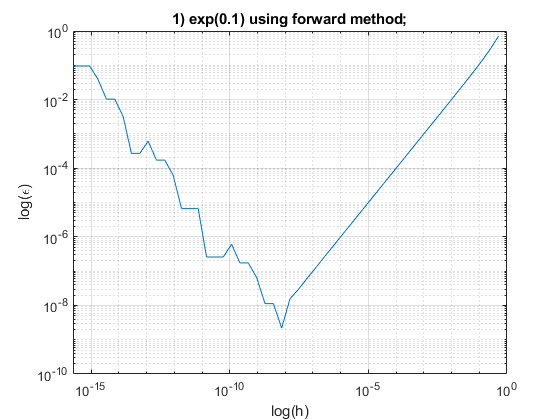 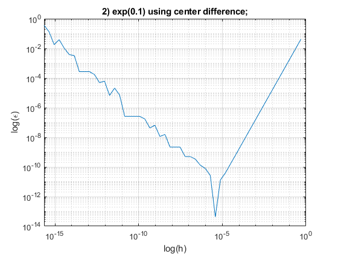 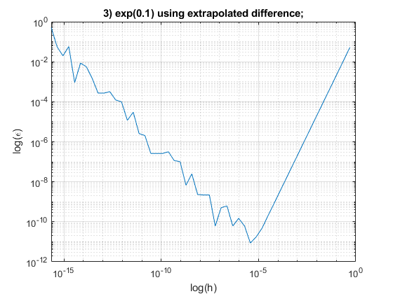 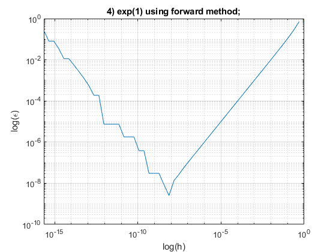 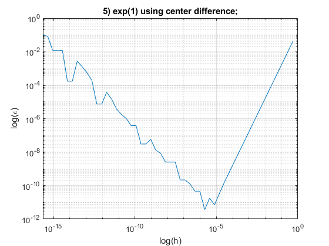 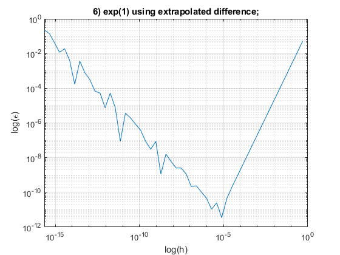 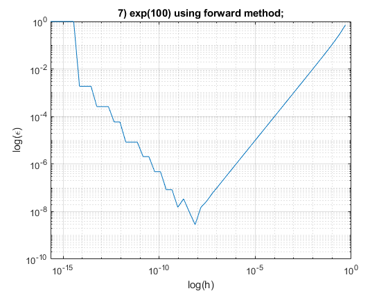 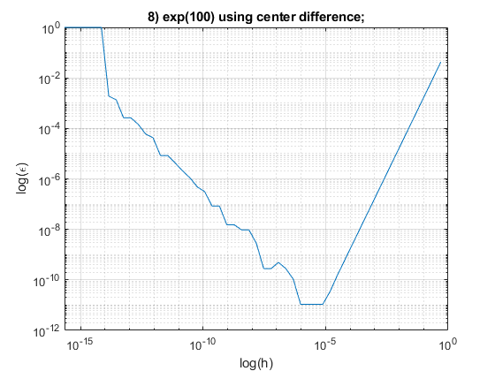 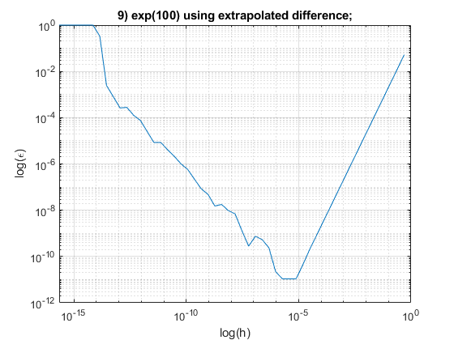 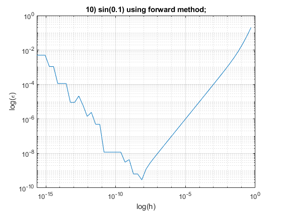 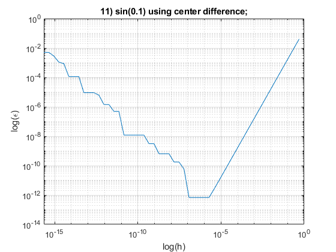 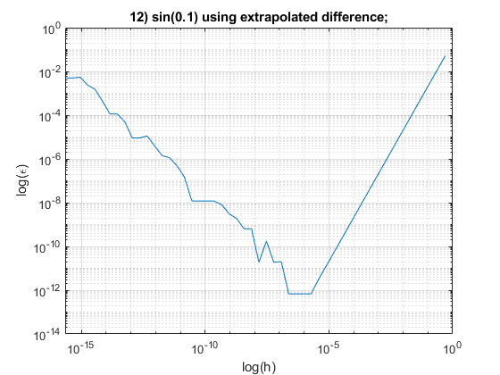 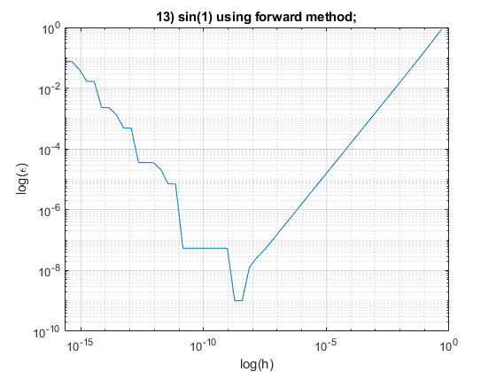 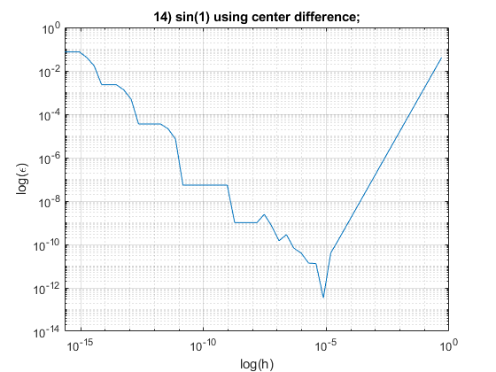 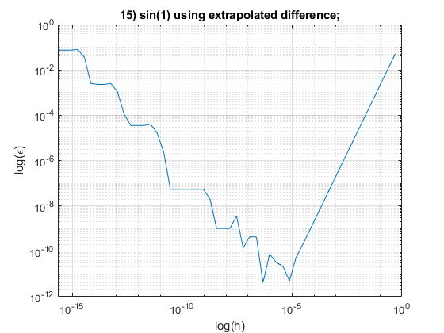 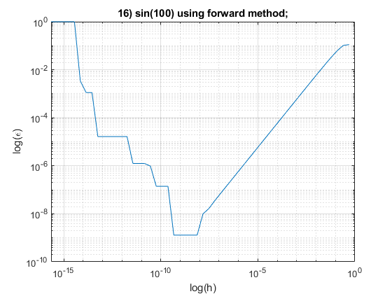 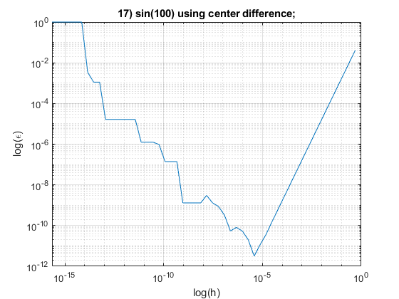 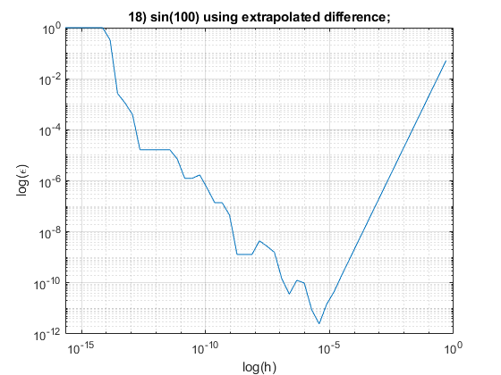